| 選択肢 | 解説 |
|---|---|
| ａ 圧迫包帯 | 区画を外から締めつける典型的な原因。腫脹が進んだ四肢に弾性包帯をきつく巻くと、区画の容積が広がれなくなって内圧が跳ね上がる。 |
| ◯ ｂ 床上安静 | ◯ 床上安静は区画内圧を上げる要素をひとつも持たない。ベッドで横になっているだけでは、区画の中身が増えるわけでも外から締められるわけでもないので、これだけが「原因で誤っている」＝正解である。（長期臥床が招くのは深部静脈血栓症・褥瘡・廃用であってコンパートメント症候群ではない。） |
| ｃ ギプス固定 | 最も頻度の高い外因。受傷直後は腫脹がこれから強くなるので、巻いた時点でぴったりでも数時間後には締めつけになる。だからこそ「疑ったらまずギプスを割る・外す」が第一手になる。 |
| ｄ 筋肉内血腫 | 区画の中身が増える典型例。骨折部からの出血、筋挫傷、抗凝固薬内服中の出血などで血腫ができると、伸びない筋膜に囲まれた区画の圧が直接上がる。 |
| ｅ 長時間手術 | 長時間の砕石位・側臥位などで下腿が圧迫され続けると、手術している部位とは関係のない下肢に起こる（well leg compartment syndrome）。駆血帯の長時間使用による再灌流性浮腫も同じ機序である。 |
| 徴候（5P） | 中身 | 出かた |
|---|---|---|
| Pain（疼痛） | 損傷の程度に見合わない激しい痛み。鎮痛薬が効かない | 最も早い |
| Pain on passive stretch （他動伸展時痛） | 虚血に陥った筋を他人が引き伸ばすと激痛が走る | 最も早く・最も鋭敏。これ1つで動く |
| Paresthesia（錯感覚） | しびれ・感覚鈍麻。区画内の神経が虚血に陥る | 早い |
| Paralysis（麻痺） | 筋力低下から自動運動不能へ | やや遅い |
| Pulselessness（脈拍消失）／ Pallor（蒼白） | 太い動脈は区画内圧より高い圧で流れているので最後まで潰れない | 最も遅い。触れるからといって否定できない |
| 選択肢 | 解説 |
|---|---|
| ａ 膵 癌 | 膵癌の背部痛は持続性で、体位や動作では変わらず、夜間に強いのが特徴である。本例は夜間睡眠中は痛くなく、起き上がる動作でだけ強くなる＝典型的な体動時痛で、腹部所見も体重減少も無い。 |
| ｂ 腎盂腎炎 | 発熱と肋骨脊柱角〈CVA〉の叩打痛、膿尿が必須である。本例は体温36.7℃で発熱がなく、叩打痛の部位が「背部正中」＝椎体の上であってCVA（背骨から外れた側方）ではない。 |
| ｃ 尿管結石 | 突然発症の激烈な疝痛で、じっとしていられずのたうつのが典型で、血尿を伴う。本例は「動かなければ痛くない」という正反対の痛み方で、肉眼的血尿も無い。 |
| ◯ ｄ 脊椎圧迫骨折 | ◯ 高齢女性＋軽微な負荷（前屈み）で発症＋体動時痛（起き上がりで最も強い）＋安静時・夜間は痛くない＋背部正中の叩打痛——これらは脊椎圧迫骨折の教科書的な組み合わせである。さらに20歳代からの身長低下4cm（＝すでに複数の椎体が潰れている）、胃切除後（カルシウム・ビタミンD吸収低下）、母の大腿骨近位部骨折（家族歴）と骨粗鬆症の危険因子が3つそろっている。 |
| ｅ 腹部大動脈瘤破裂 | 破裂すれば出血性ショック（血圧低下・頻脈・冷汗）と拍動性腹部腫瘤を伴い、数時間で致死的になる。本例は昨日からの経過で血圧106/80mmHg・脈拍76と循環が保たれ、腹部所見も正常である。 |
| 記載 | 意味 |
|---|---|
| 82歳・女性 | 閉経後エストロゲン低下＋加齢＝最大の危険因子 |
| 20歳代から身長低下4cm | 2cm以上の身長低下は既存の椎体骨折を示唆する。本例はすでに繰り返している |
| 48歳時に胃癌で胃切除 | 胃酸が減ってカルシウムが溶け出せず、吸収面積も減る＝続発性骨粗鬆症 |
| 母が大腿骨近位部骨折 | 家族歴は独立した危険因子（FRAX®の項目） |
| グルココルチコイドの使用歴はない | あえて「ステロイド性ではない＝原発性」と言い切るための記載 |
| 検査 | 分かること | 位置づけ |
|---|---|---|
| 単純エックス線 （正面・側面） | 椎体の楔状変形・魚椎変形・扁平椎、椎体高の減少、終板の不整 | 最初に行う。立位側面像だと潰れが強調されて分かりやすい |
| MRI（脊椎） | T1低信号・T2（STIR）高信号＝骨髄浮腫。これが「新鮮骨折」の証拠。転移性脊椎腫瘍・化膿性脊椎炎との鑑別、神経圧迫の評価 | エックス線で説明がつかない／複数の椎体が潰れていてどれが新しいか分からない／神経症状があるとき |
| CT | 後壁の破綻（破裂骨折）・骨片の脊柱管内への突出 | 手術を検討するとき |
| 骨密度（DXA） | 骨粗鬆症の診断・薬物治療の適応と効果判定 | 急性期を過ぎてから。骨折の有無は分からない |
| 選択肢 | 解説 |
|---|---|
| ａ 尿検査 | 尿路感染症や尿管結石を疑ったときの検査である。本例は発熱も血尿も排尿障害も無いと問題文がわざわざ否定しており、これらを最初に探す状況ではない。 |
| ｂ 骨密度検査 | 骨粗鬆症の「診断と治療方針」には必要だが、目の前の骨折があるかどうかは分からない。骨密度は急性期を過ぎて治療を組み立てる段階で行うもので、体動困難で救急外来にいる患者に「まず」行う検査ではない。 |
| ｃ 腹部単純MRI | MRIは新鮮骨折と陳旧性骨折の鑑別（骨髄浮腫の有無）や神経圧迫の評価に極めて有用だが、高価で時間がかかり、どこでもすぐ撮れるわけではない。また撮るなら「腹部」ではなく脊椎である。単純エックス線で見当をつけてから撮るのが順序。 |
| ｄ 腹部超音波検査 | 腹部大動脈瘤や水腎症をベッドサイドで否定したいときの検査。本例は腹部所見が正常で循環動態も安定しており、痛みは腹部ではなく背部正中の骨に局在している。 |
| ◯ ｅ 脊椎エックス線撮影 | ◯ 骨折を疑ったら、まず単純エックス線。安価・迅速・どこでも撮れて、椎体の楔状変形・終板の陥凹・椎体高の減少という圧迫骨折の所見が直接写る。立位（あるいは坐位）の側面像を撮ると椎体の潰れがよく分かる。「疑った疾患を最も安く早く確かめられる検査から始める」という国試の大原則どおりである。 |
| 選択肢 | 解説 |
|---|---|
| ａ 尿管結石 | 突然の激烈な疝痛と血尿が典型で、尻もちという明確な外傷を契機に発症することはない。叩打痛の部位も側方（CVA）である。 |
| ｂ 強直性脊椎炎 | 若年男性に発症し、数か月以上かけて進行する慢性の炎症性疾患。安静で悪化し体を動かすと軽快する炎症性腰背部痛と朝のこわばりが特徴で、本例の「本日転倒してから」という急性発症と正反対である。 |
| ◯ ｃ 脊椎圧迫骨折 | ◯ 尻もち（軸圧）→ 直後から体動困難 → 背部正中の叩打痛 → 神経症状なしという流れがそのまま圧迫骨折である。さらに本例は関節リウマチ＋グルココルチコイド長期内服で、続発性骨粗鬆症の2大原因を同時に持っている（RAそのものが炎症性サイトカインで骨吸収を進め、ステロイドが骨形成を抑える）。 |
| ｄ 腰部脊柱管狭窄症 | 間欠跛行（歩くと下肢がしびれ、前屈で休むと歩ける）が主症状で、下肢症状が主体で腰痛は軽い。徐々に進行する疾患であって、外傷の直後に体動困難となるものではない。 |
| ｅ 腰椎椎間板ヘルニア | 下肢へ放散する神経根症状（坐骨神経痛）とSLRテスト陽性が中心で、20〜40歳代に好発する。本例は「両下肢に感覚障害や運動障害を認めない」と明記されており神経根症状が無い。 |
| 型 | 痛み方 | 代表 |
|---|---|---|
| 骨（脆弱性骨折） | 軽微な外力で急性発症。体動時痛・安静時無痛。棘突起上（正中）の叩打痛 | 脊椎圧迫骨折 |
| 神経 | 下肢への放散痛・しびれ・間欠跛行。腰そのものの痛みは軽い | 腰椎椎間板ヘルニア／腰部脊柱管狭窄症 |
| 内臓 | 体位・動作で変わらない持続痛。発熱・血尿・ショックなど全身所見を伴う | 膵癌・尿管結石・腎盂腎炎・大動脈瘤破裂・大動脈解離 |
| 危険な骨（red flag） | 安静時・夜間に強い痛み、発熱、体重減少、進行性の神経症状 | 転移性脊椎腫瘍・化膿性脊椎炎・硬膜外膿瘍 |
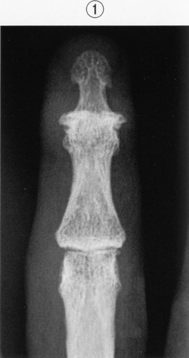
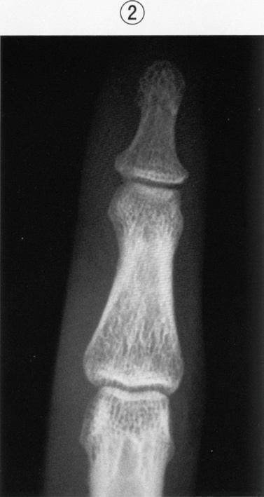
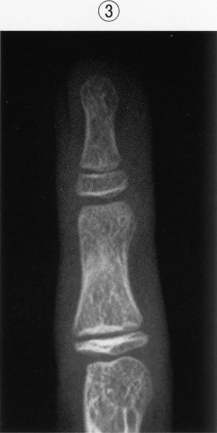
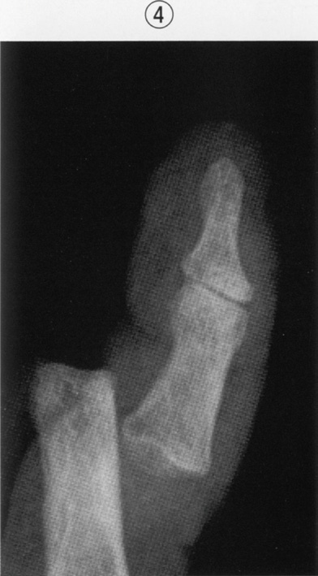
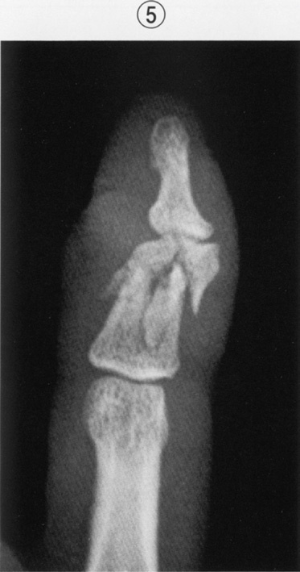
| 見るところ | 骨折なら |
|---|---|
| ① 骨皮質の連続性 | 白く緻密な皮質のラインがどこかで途切れる・段差ができる（step off）。最も確実な所見 |
| ② 骨折線（透亮線） | 骨の中を走る黒い線。縁が不整で、関節裂隙と違い両側の骨が「向き合って」いない |
| ③ 転位・変形 | 骨軸の屈曲、短縮、回旋、関節面の段差 |
| ④ 軟部組織・脂肪体 | 腫脹の陰影。肘ならfat pad sign（後方脂肪体の挙上）が関節内骨折を示唆する |
| 選択肢 | 解説 |
|---|---|
| ａ ① | 末節骨・中節骨とも皮質骨の連続性が保たれ、骨折線も転位も無い。DIP関節の関節裂隙も均一である。 |
| ｂ ② | 骨皮質は途切れておらず、関節裂隙も保たれている。正常な手指の正面像である。 |
| ｃ ③ | DIP・PIP関節の裂隙が明瞭に見えるが、骨には亀裂も段差も無い。関節裂隙（透亮線）を骨折線と読み違えないことが大事で、関節裂隙は両側の骨端が滑らかな輪郭で向き合っている点で骨折線と区別できる。 |
| ｄ ④ | 斜位で撮られており指が重なって見えるが、骨皮質は連続しており転位した骨片も無い。 |
| ◯ ｅ ⑤ | ◯ DIP関節部に明瞭な骨折線と転位した骨片があり、骨皮質の連続性が断たれている。末節骨基部と中節骨頭部の輪郭が乱れ、関節面に段差（step off）が生じているのが分かる。滑らかな輪郭で向き合う「関節裂隙」ではなく、不整な縁を持つ「骨折線」である。 |
| 名称 | 病態 | 治療 |
|---|---|---|
| 槌指〈マレットフィンガー〉 | DIP関節が伸ばせず屈曲したまま垂れる。終止腱の断裂（腱性）と、末節骨基部背側の裂離骨折（骨性）がある | 腱性は伸展位固定6〜8週。骨性で関節面の1/3以上・掌側亜脱臼があれば手術 |
| Bennett骨折 | 母指CM関節の関節内骨折・脱臼 | 不安定なので観血的整復固定が多い |
| Boxer骨折 （第5中手骨頸部骨折） | 拳で殴って受傷。掌側凸に屈曲変形 | 整復＋固定。回旋変形は許容しない |
| 選択肢 | 解説 |
|---|---|
| ◯ ａ 筋膜切開 | ◯ 他動伸展時痛＋自動運動不能＋著明な腫脹＋橈骨動脈触知不能——コンパートメント症候群がすでに完成している。脈が触れないのは最も遅い徴候で、ここまで来ていれば検査で確認する時間も惜しく、ただちに緊急筋膜切開（減張切開）を行う。発症から6〜8時間で筋は不可逆的に壊死し、本例はすでに8時間が経過している。 |
| ｂ 牽引治療 | 骨折の整復・保持の方法であって、区画内圧を下げる作用はまったく無い。それどころか牽引で軟部組織が緊張すれば内圧はむしろ上がる。 |
| ｃ ギプス固定 | 最悪の選択。今まさに外からの締めつけを外したところなのに、再び全周性に固定すれば区画内圧はさらに上がって数時間で筋が壊死する。 |
| ｄ 手指の可動域訓練 | 他動伸展でこそ激痛が走っている状態である。虚血に陥った筋を無理に伸ばしても痛みを与えるだけで内圧は1mmHgも下がらない。リハビリテーションは血流を回復させた後の話である。 |
| ｅ 骨折の観血的整復固定 | 骨折そのものの治療は必要だが優先順位が違う。いま失われつつあるのは骨ではなく筋と神経で、先に筋膜を開いて血流を戻す。（実際には筋膜切開と同時に骨折の固定を行うことが多いが、「これ1つを選ぶ」なら減圧が先である。） |
| 段階 | やること |
|---|---|
| ① 疑ったら | ギプス・シーネ・包帯をただちに全周性に除去する（外からの締め付けが原因なら、これだけで内圧が下がる） |
| ② 患肢の高さ | 心臓の高さに保つ。挙上してはいけない——挙上すると動脈圧が下がってかえって灌流圧が落ちる |
| ③ 確定診断 | 区画内圧測定（30mmHg以上、あるいは拡張期血圧との差〈ΔP〉が30mmHg未満が目安） |
| ④ 治療 | 緊急の筋膜切開〈減張切開〉。発症から6〜8時間が筋・神経の限界 |
| 放置すると | 筋の壊死→線維性瘢痕化＝Volkmann拘縮（不可逆）。広範なら横紋筋融解→高K血症・急性腎障害〈クラッシュ症候群〉 |
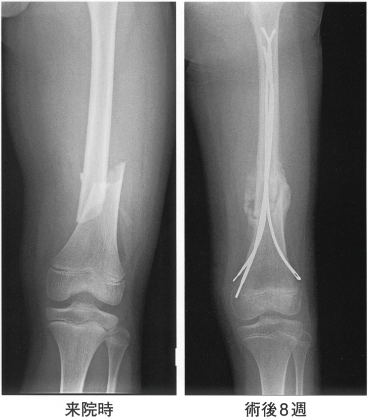
| 時期 | 相 | 起きていること |
|---|---|---|
| 受傷直後 （数時間〜数日） | 炎症期 | 血腫形成→マクロファージ・好中球の浸潤（壊死組織の処理）→毛細血管新生と間葉系細胞の遊走 |
| 数日〜2週 | 軟性仮骨期 | 間葉系細胞が軟骨細胞へ分化しコラーゲン（Ⅱ型）を産生。やわらかい軟性仮骨が骨折部を橋渡しする |
| 2〜8週 | 硬性仮骨期 | 骨芽細胞が現れ軟骨を置きかえる（軟骨内骨化）。エックス線で仮骨が雲状の陰影として見えるようになる |
| 数か月〜数年 （最後） | リモデリング期 | 破骨細胞と骨芽細胞が織骨を層板骨へ作りかえ、髄腔が再開通して皮質骨が再建される |
| 選択肢 | 解説 |
|---|---|
| ａ 骨腫瘍が発生している。 | 外傷や手術が骨腫瘍を発生させることはない。骨折部周囲の新生骨陰影を骨肉腫と読み違えないこと——腫瘍なら骨皮質の破壊・骨膜反応（Codman三角・spicula）・軟部腫瘤と、持続する疼痛や腫脹を伴う。本例は「異常所見を認めない」と明記されている。 |
| ◯ ｂ 仮骨が形成されている。 | ◯ 術後8週は硬性仮骨期にあたり、骨折部の周囲に雲状（cloud-like）の淡い骨性陰影＝仮骨がエックス線で見えるようになる時期である。写真でも髄内釘の周囲、骨折部を橋渡しするように新生骨の陰影が広がっている。経過が順調な骨折治癒そのものであり、小児は骨膜が厚く血流も豊富なので仮骨形成が旺盛で早い。 |
| ｃ 腐骨が形成されている。 | 腐骨〈sequestrum〉は骨髄炎で血流を失って壊死した骨片で、周囲より白く硬化した骨片が透亮帯に取り囲まれて浮いて見える。発熱・疼痛・排膿・炎症反応上昇を伴うはずで、「経過順調・異常所見なし」とは両立しない。 |
| ｄ 異所性骨化が生じている。 | 本来骨のない軟部組織（筋・関節周囲）に骨ができる病態で、股関節手術後・頭部外傷後・脊髄損傷後・熱傷後に多い。関節可動域制限を来すのが問題になる。本例の新生骨は骨折部そのものを橋渡ししており、軟部組織内の異所性骨化ではない。 |
| ｅ 阻血性壊死が生じている。 | 骨折後の阻血性壊死は血行が乏しい部位——大腿骨頸部骨折後の骨頭、手舟状骨骨折後の近位骨片、距骨頸部骨折後の距骨体——で起こる。大腿骨骨幹部は血流に富み、阻血性壊死の好発部位ではない。また壊死ならエックス線で骨硬化像や圧潰が見える。 |
| 因子 | 中身 |
|---|---|
| 局所の血流不良 | 大腿骨頸部・手舟状骨・距骨・脛骨下1/3などもともと血行に乏しい部位。開放骨折・広範な軟部組織損傷 |
| 固定が不十分 | 骨折部が動き続けると軟性仮骨が壊れ続けて骨化まで進めない |
| 骨片間の介在 | 骨折部に筋・軟部組織が挟まる／骨欠損が大きい／牽引のかけすぎで離開する |
| 感染 | 骨髄炎になれば癒合は望めない |
| 全身因子 | 喫煙・糖尿病・低栄養・ステロイド・NSAIDsの長期使用・高齢 |
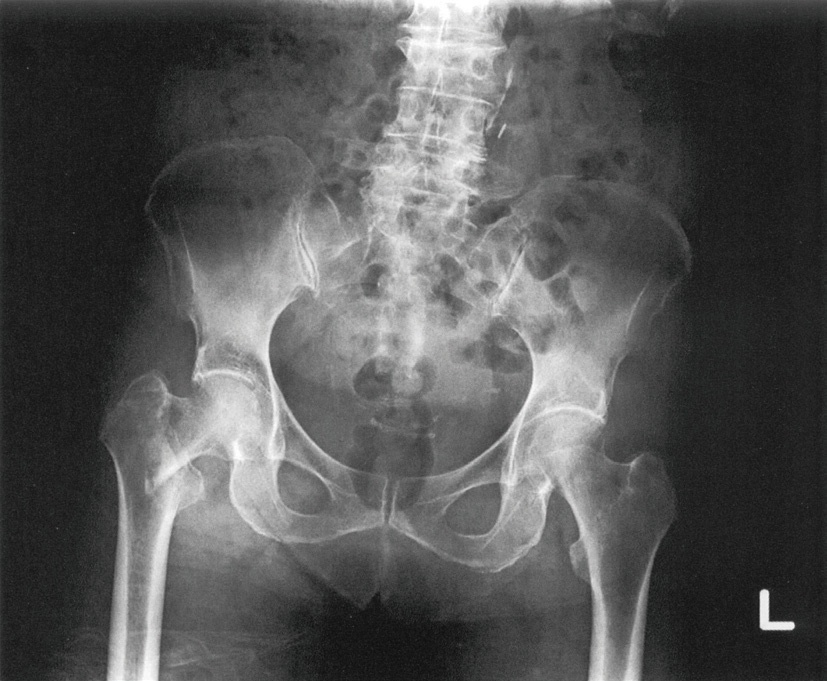
| 大腿骨頸部骨折（内側骨折） | 大腿骨転子部骨折（外側骨折） | |
|---|---|---|
| 部位 | 関節包の内側 | 関節包の外側 |
| 血流 | 骨頭を養う内側大腿回旋動脈が切れやすい＝骨頭壊死・偽関節が起こりやすい | 海綿骨が豊富で血流もよく骨癒合しやすい |
| 出血・腫脹 | 関節包内なので外からは目立たない | 皮下出血・腫脹が目立ち、出血量も多い |
| 手術 | 転位が小さければ骨接合術、転位が大きい／高齢なら人工骨頭置換術 | 骨接合術（髄内釘・スライディングヒップスクリュー） |
| どちらも「可及的早期（原則48時間以内）の手術で離床を早める」が大原則。長期臥床・牽引は肺炎・褥瘡・深部静脈血栓症・認知機能低下・廃用を招き、生命予後を悪くする | ||
| 選択肢 | 解説 |
|---|---|
| ａ 恥骨骨折 | 骨粗鬆症の高齢者が転倒して起こることはあるが、恥骨単独骨折は歩行可能なことも多く、疼痛は鼠径部・恥骨部に限局する。また股関節を動かして激痛が走るという所見の主座にならない。 |
| ｂ 坐骨骨折 | 坐骨結節の裂離骨折はスポーツによる若年者の損傷で、高齢者の転倒でこの部位が単独で折れることは少ない。痛みは殿部・坐位で強く、股関節運動時の激痛という形にはなりにくい。 |
| ｃ 腸骨骨折 | 高エネルギー外傷（交通事故・転落）で起こる骨盤骨折の一部で、大量出血とショックを伴うことが多い。自宅の玄関で転倒した程度の低エネルギー外傷では起こらない。 |
| ｄ 股関節脱臼 | 交通事故のダッシュボード損傷など強大な外力で起こる。後方脱臼では屈曲・内転・内旋位に弾発性固定され、エックス線で骨頭が臼蓋から完全に外れて見える。低エネルギー外傷では起こらず、本例の肢位の記載とも合わない。 |
| ◯ ｅ 大腿骨近位部骨折 | ◯ 高齢女性＋自宅内での転倒（低エネルギー外傷）＋起立歩行不能＋股関節の運動時痛——これで大腿骨近位部骨折を第一に考える。下腿に所見が無い（腫脹も圧痛もない）という記載は、痛みの主座が股関節にあることを念押ししている。エックス線でも大腿骨近位部の骨皮質の連続性が断たれ、骨折線と転位が確認できる。 |
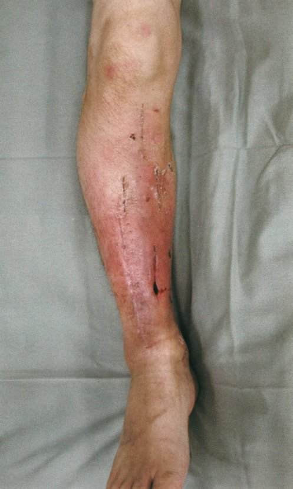
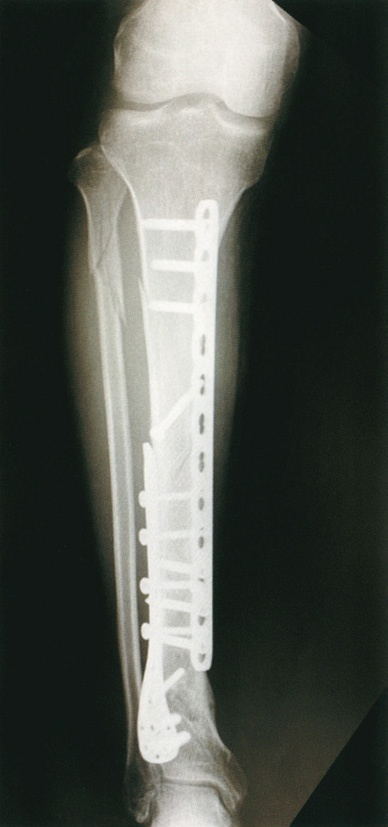
| 選択肢 | 解説 |
|---|---|
| ａ 下腿切断 | 切断は血行再建が不能・広範な組織壊死・制御不能な敗血症・神経が完全に断裂して機能回復が望めないといった、肢を残すことが命を危うくする状況で選ぶ最終手段である。本例は全身状態が保たれ、まだ感染巣の掃除（デブリドマン）を試していない段階で、飛び越えてよい選択ではない。 |
| ｂ ギプス固定 | 感染創を外から覆って密閉するだけで、膿の逃げ場を奪い観察もできなくなるので感染にとっては最悪である。固定は必要だが、それは創を開けたまま管理できる創外固定で行う。 |
| ｃ 足関節固定術 | 足関節の変形性関節症や麻痺に対して関節を意図的に骨癒合させる待機的な手術である。活動性の感染がある部位に新たな侵襲と固定材料を加えるのは禁忌で、そもそも本例の病変は足関節ではない。 |
| ◯ ｄ デブリドマン | ◯ 発熱38.8℃・白血球19,200・CRP 21mg/dL・創の離開・発赤熱感腫脹——プレート内固定後の術後感染（骨髄炎）である。感染巣に異物（プレート）とバイオフィルムがある以上、抗菌薬だけでは治らない。感染組織・壊死組織を外科的に切除して細菌量を落とすこと（デブリドマン）が治療の主体で、必要ならプレートを抜いて創外固定へ戻す。「感染はドレナージとデブリドマン。抗菌薬は補助」という外科感染症の大原則そのものである。 |
| ｅ 骨折部への人工骨移植 | 感染している場所に新しい異物を置く行為で、人工骨は血流を持たないためバイオフィルムの温床になり感染を悪化させる。骨移植を考えるのは感染を完全に制圧してからの再建段階である。 |
| 経過 | 評価 |
|---|---|
| 受傷6時間後に洗浄・デブリドマン・創外固定 | golden period（6〜8時間）内で教科書どおり |
| 受傷後1週で創外固定を抜去しプレート内固定へ変更 | 早すぎる。汚染創の軟部組織が落ち着く前に異物を骨に埋め込んだ |
| 5週後に発熱・創離開・CRP 21 | インプラント関連感染（骨髄炎）が成立 |
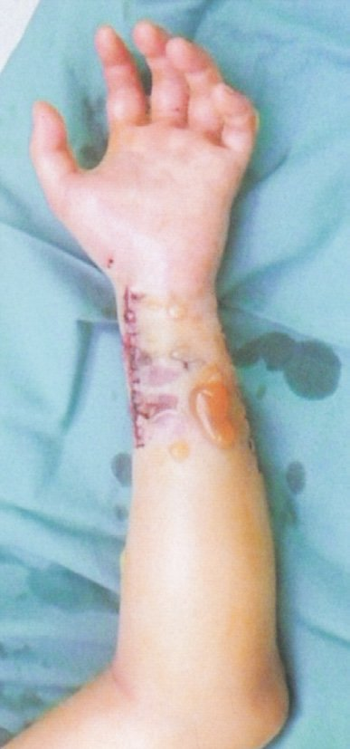
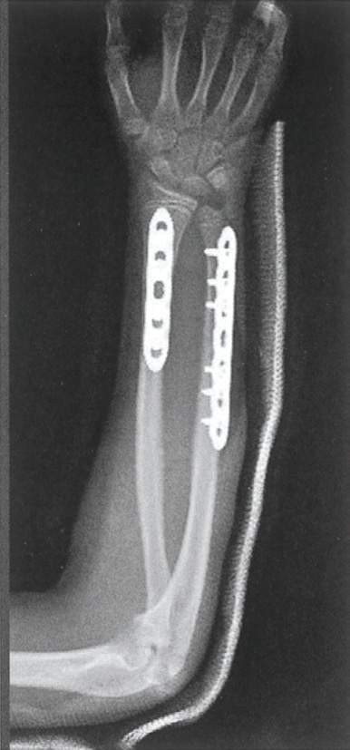
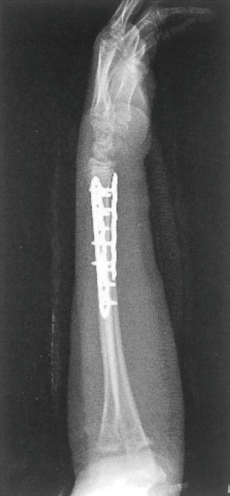
| 選択肢 | 解説 |
|---|---|
| ａ 手袋状感覚脱失 | 手袋・靴下型の感覚脱失は糖尿病性・中毒性などの多発ニューロパチーや心因性（転換性障害）でみられる分布で、末梢神経の支配領域を越えて境界が明瞭に切れるのが特徴である。前腕のコンパートメント症候群で起こる感覚障害は正中神経・尺骨神経など個々の神経の支配領域に一致する。 |
| ◯ ｂ Volkmann 拘縮 | ◯ 前腕のコンパートメント症候群を放置した結果がVolkmann拘縮〈阻血性拘縮〉である。区画内圧の上昇で前腕屈筋群（とくに深指屈筋・長母指屈筋）が阻血に陥り、6〜8時間で壊死→線維性瘢痕に置き換わる。瘢痕は縮むので手関節と手指が屈曲位に引きつけられ、伸ばそうとすると伸びない（手関節を屈曲させれば指が伸びる＝Volkmann徴候）。「翌朝まで待つ」と間に合わないのはまさにこれで、一度完成すると不可逆である。 |
| ｃ 異所性骨化 | 軟部組織に骨ができる病態で、頭部外傷後・脊髄損傷後・股関節手術後・熱傷後に多い。数週間かけて形成される慢性の合併症で、「今夜手術するか翌朝にするか」で分かれるものではない。 |
| ｄ 偽関節 | 骨癒合が得られないまま骨折部に異常可動性が残る状態で、判定は通常6〜9か月経ってから行う。数時間の遅れで決まる合併症ではない。 |
| ｅ 骨壊死 | 骨壊死（阻血性壊死）は大腿骨頭・手舟状骨近位・距骨体など血行に乏しい特定の部位で起こり、数か月かけて画像に現れる。本例で数時間のうちに失われようとしているのは骨ではなく筋と神経である。 |
| 合併症 | 決まる時間軸 | ひとこと |
|---|---|---|
| コンパートメント症候群→Volkmann拘縮 | 数時間（6〜8時間） | 今夜動くか明日にするかで一生が変わる |
| 血管損傷・阻血 | 数時間 | 同上（血行再建） |
| 開放骨折の感染 | 6〜8時間（golden period） | 洗浄・デブリドマンの期限 |
| 脂肪塞栓症候群 | 受傷後12〜72時間 | 長管骨骨折後の呼吸不全・意識障害・点状出血 |
| 異所性骨化 | 数週間 | 可動域制限 |
| 偽関節・骨壊死 | 数か月 | 画像で追う |
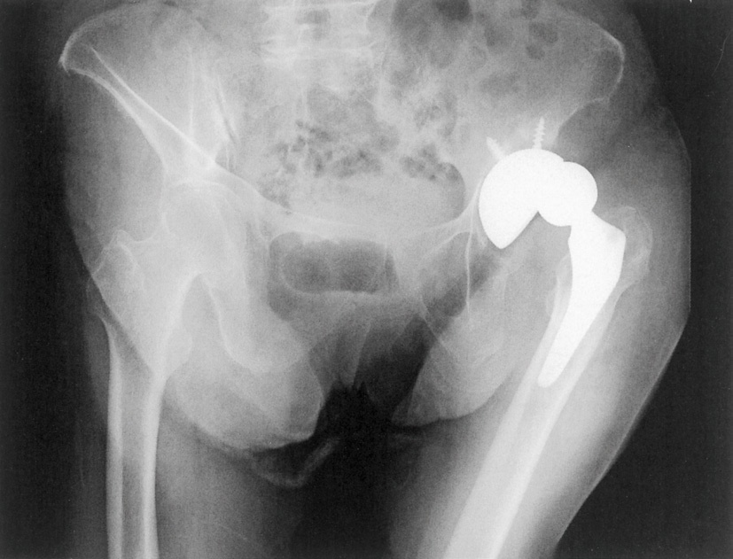
| 後方脱臼（大多数） | 前方脱臼 | |
|---|---|---|
| 肢位 | 屈曲・内転・内旋 | 伸展・外転・外旋 |
| きっかけの動作 | 深くしゃがむ・正座から立つ・低い椅子・足を組む・体をひねって振り返る | 股関節を伸ばして外旋する（後ろに手を伸ばす・うつ伏せ） |
| 合併しやすい神経障害 | 坐骨神経（腓骨神経）麻痺＝下垂足 | 大腿神経障害 |
| 選択肢 | 解説 |
|---|---|
| ａ 関節造影 | 造影剤を関節内に入れて関節唇や軟骨を評価する検査で、脱臼は単純エックス線だけで診断がつく。診断がすでについている状況で、侵襲的な検査を追加する意味がない。 |
| ｂ 関節穿刺 | 化膿性関節炎を疑うときの検査（関節液の細胞数・培養）である。本例は発熱も炎症所見も無く、「転倒した直後から」という明確な外傷歴があり、感染を疑う状況ではない。 |
| ｃ 左下肢のギプス固定 | 脱臼したまま固めてしまうことになる。整復されていない関節を固定するのは、どの関節でも誤りである。 |
| ◯ ｄ 左股関節の徒手整復 | ◯ 人工股関節の後方脱臼である。屈曲・内転・内旋位という肢位がそのまま後方脱臼の所見で、初期対応は徒手整復。脱臼は「関節が外れている」状態であり、時間が経つほど周囲の筋が攣縮して整復が難しくなり、骨頭や臼蓋（ライナー）を傷める。鎮静・麻酔下に速やかに徒手整復し、整復後にエックス線で確認して外転枕・装具で肢位を保つのが標準である。 |
| ｅ 左下肢の持続鋼線牽引 | 牽引は整復した後に肢位を保つ、あるいは手術までのつなぎで用いる手段で、これ自体で脱臼を整復する方法ではない。本例のように徒手整復で戻せる新鮮脱臼に、わざわざ侵襲的な鋼線牽引を選ぶ理由はない。 |
| 手順 | 中身 |
|---|---|
| ① 神経血管の評価 | 整復の「前」に必ず記録する（股関節後方脱臼なら坐骨神経／膝関節脱臼なら膝窩動脈） |
| ② 整復 | 鎮静・筋弛緩下に愛護的に徒手整復。戻らなければ観血的整復 |
| ③ 整復後の確認 | エックス線で整復位、再び神経血管の評価、CTでコンポーネントの設置角度や骨折の有無 |
| ④ 保持と再発予防 | 外転枕・装具で数週間。禁忌肢位の再指導。反復するならコンポーネントの入れ替えを検討 |
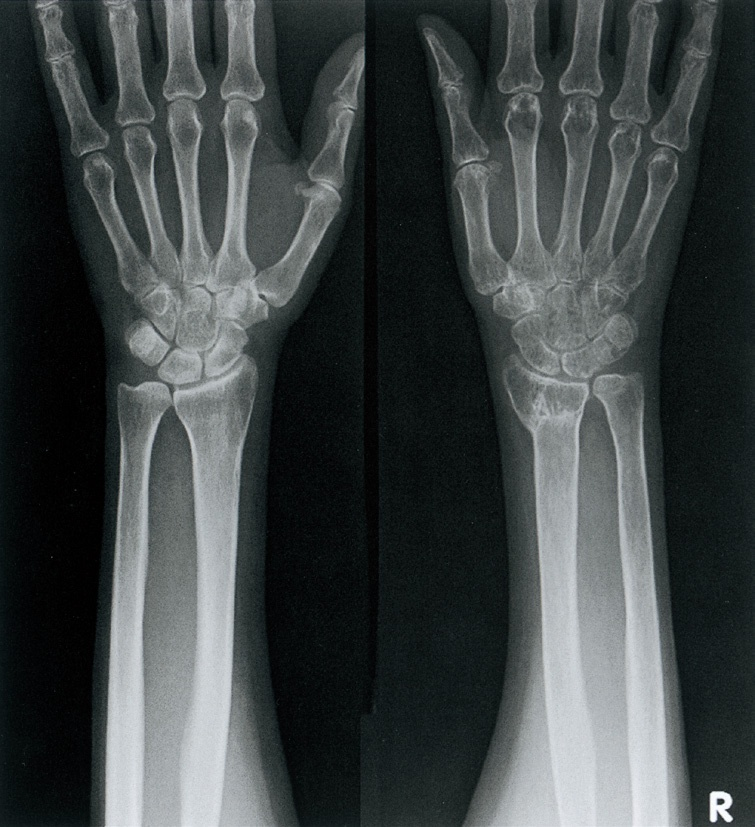
| 選択肢 | 解説 |
|---|---|
| ａ 偽関節 | 骨折部が癒合せず異常可動性が残る状態で、痛みは骨折部に限局し、動かすとぐらつく。本例の症状は骨折部を越えて手指全体に広がっており、発汗異常という自律神経症状まで伴う——これは骨の問題では説明できない。 |
| ｂ 手根管症候群 | 正中神経の絞扼で、母指〜環指橈側のしびれ・夜間や明け方の痛み・短母指外転筋の萎縮でつまみ動作が障害される。本例は「つまみ動作は可能」で、症状が正中神経領域に収まらず手全体に及び、全関節に可動域制限がある点が合わない。（発汗亢進や関節拘縮は手根管症候群では説明できない。） |
| ｃ 離断性骨軟骨炎 | 関節軟骨下の骨が阻血で分離する疾患で、成長期のスポーツ選手の肘（上腕骨小頭）・膝・足関節に好発する。72歳の手関節で外傷後3か月に発症する病態ではない。 |
| ◯ ｄ 複合性局所疼痛症候群 | ◯ 骨折・ギプス固定の後に、損傷の程度に見合わない痛みが「範囲を広げて」続き、アロディニア（触られると刺すような痛み）・発汗異常・腫脹・関節拘縮を伴う——複合性局所疼痛症候群〈CRPS〉である。エックス線でも患側にだけ斑状（まだら）の骨萎縮（Sudeck骨萎縮）がみられ、健側と並べて撮ってあるのがその比較のためである。「痛み・自律神経症状・運動障害・栄養障害の4つが神経の支配領域を越えて広がる」のが核心。 |
| ｅ コンパートメント症候群 | 受傷や固定の直後、数時間から数日で急性に発症し、他動伸展時痛・激烈な疼痛・区画内圧上昇を呈する。本例は3か月かけて徐々に悪化した慢性の経過で時間軸がまったく違う。（もし急性期に起こっていれば、結果はVolkmann拘縮である。） |
| 見落としの型 | 切り分ける手がかり |
|---|---|
| 「ギプス後だから固まっているだけ」 | 拘縮だけなら「触られて刺すように痛い」「発汗が増える」は起こらない |
| 「橈骨遠位端骨折後だから手根管症候群」 | 症状が正中神経領域に収まるか。本例は手全体＋全関節 |
| 「骨がくっついていないのでは」 | 偽関節なら痛みは骨折部に限局し、自律神経症状は出ない |
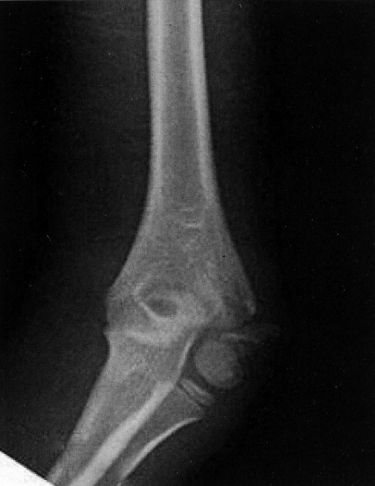
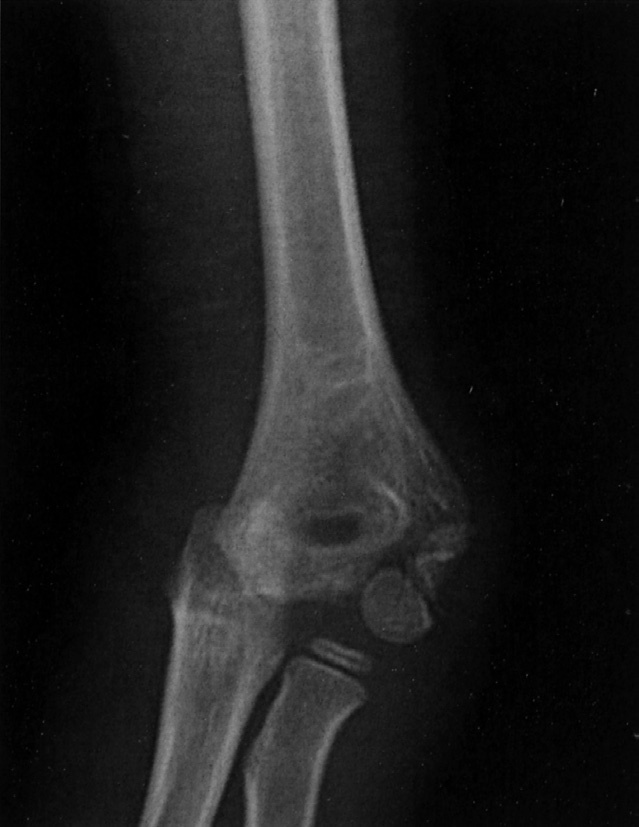
| 疾患 | 年齢・機転 | 所見 | 注意 |
|---|---|---|---|
| 上腕骨顆上骨折 | 5〜8歳。手をついて肘が過伸展 | 肘の著明な腫脹・変形。側面像で骨片が後方転位 | コンパートメント症候群→Volkmann拘縮／正中・橈骨・尺骨神経麻痺 |
| 上腕骨外側顆骨折 | 4〜10歳。内反力 | 外側の限局した腫脹・圧痛。骨端核を含む関節内骨折 | 関節内骨折で自然矯正が効かず、偽関節・外反肘・遅発性尺骨神経麻痺を残す |
| 肘内障 | 1〜4歳。手を引っ張られた | 腫脹・変形なし。回内位で腕を下げたまま使わない | 徒手整復で即座に使い出す |
| 肘関節脱臼 | 学童以降。手をついて過伸展 | 肘頭の後方突出・弾発性固定。エックス線で尺骨・橈骨が上腕骨と関節を失う | 整復後に不安定性・神経血管損傷を確認 |
| Monteggia骨折 | 学童 | 尺骨骨幹部骨折＋橈骨頭脱臼の組合せ | 橈骨頭脱臼を見落としやすい |
| 選択肢 | 解説 |
|---|---|
| ａ 肘内障 | 1〜4歳が手を引っ張られて起こる橈骨頭の亜脱臼で、腫脹・変形・皮下出血がまったく無いのが最大の特徴である。本例は「肘部全体に高度な腫脹」があり、受傷機転も転落（軸圧・過伸展）なので真っ向から否定される。 |
| ◯ ｂ 肘関節脱臼 | ◯ エックス線で橈骨・尺骨が上腕骨遠位に対して内側（後内側）へずれ、正常な関節の対応関係を失っている。上腕骨小頭と橈骨頭を結ぶ線（radiocapitellar line）がずれていることが読み取れる。転落して手をつき肘が過伸展した際の典型的な損傷で、高度の腫脹と自動運動不能とも合致する。 |
| ｃ Monteggia 骨折 | 尺骨骨幹部の骨折＋橈骨頭の脱臼という組合せである。本例のエックス線には尺骨骨幹部の骨折線が無い。（橈骨頭のずれだけを見て飛びつきやすいが、尺骨の骨折を確認できなければMonteggia骨折とは言わない。） |
| ｄ 上腕骨顆上骨折 | 小児の肘周辺骨折で最多なので真っ先に浮かぶが、骨折線は上腕骨の「顆の上」＝骨幹端部を横切るはずである。本例で骨の連続性が絶たれているのは顆上部ではなく外側顆（骨端核を含む部分）であり、同時に関節そのものの対応関係が失われている。 |
| ◯ ｅ 上腕骨外側顆骨折 | ◯ 上腕骨小頭の骨端核を含む外側顆が本体から分離し、転位している。小児の肘周辺骨折で顆上骨折に次いで多く、関節内骨折（骨端線を横切るSalter-Harris Ⅳ型）である点が重要で、自家矯正が効かず、わずかな転位でも観血的整復固定を要する。本例のように脱臼を伴うと外側の支持が失われるため合併しやすい。 |
| 区画 | 主な筋 | 通る神経 | 障害されると |
|---|---|---|---|
| 前方区画 （最も多い） | 前脛骨筋・長趾伸筋・長母趾伸筋 | 深腓骨神経 | 下垂足（背屈不能）・第1-2趾間の感覚障害。足趾の他動底屈で痛む |
| 外側区画 | 長腓骨筋・短腓骨筋 | 浅腓骨神経 | 足の外反が弱い・下腿外側〜足背の感覚障害 |
| 浅後方区画 | 腓腹筋・ヒラメ筋 | 腓腹神経 | 底屈力低下・下腿後面の感覚障害 |
| 深後方区画 | 後脛骨筋・長趾屈筋・長母趾屈筋 | 脛骨神経 | 足趾の屈曲障害・足底の感覚障害。診断が遅れやすい |
| 選択肢 | 解説 |
|---|---|
| ａ 疼 痛 | 最も早く現れる症候で、損傷の程度に見合わない激烈な痛み・鎮痛薬が効かない痛みが特徴である。 |
| ｂ 錯感覚 | 区画内を走る神経が虚血に陥って生じる。しびれ・ジンジンする感じ・感覚鈍麻として現れ、疼痛に続いて比較的早期に出る。下腿前方区画なら深腓骨神経領域（第1・2趾間）が典型。 |
| ◯ ｃ 皮膚萎縮 | ◯ 皮膚萎縮は数週間から数か月かけて生じる慢性の栄養障害であり、発症から数時間で決着がつく急性期の症候ではない。急性期の皮膚所見は緊満した腫脹・光沢・水疱・（末期の）蒼白である。（皮膚が萎縮し、爪や毛が変化するのは複合性局所疼痛症候群〈CRPS〉の栄養障害や慢性の虚血でみる所見。） |
| ｄ 他動伸展時痛 | 最も鋭敏な所見。虚血に陥った筋を他人が引き伸ばすと激痛が走る。下腿前方区画なら足趾・足関節を他動的に底屈させると痛む。 |
| ｅ 区画内圧上昇 | 病態そのものであり確定診断の根拠でもある。30mmHg以上、あるいは拡張期血圧との差〈ΔP〉が30mmHg未満が筋膜切開の目安になる。 |
| 時間軸 | 所見 |
|---|---|
| 分〜時間（急性期） | 疼痛・他動伸展時痛・緊満した腫脹・錯感覚・区画内圧上昇 → 麻痺 → 蒼白・脈拍消失 |
| 日 | 水疱形成、横紋筋融解によるミオグロビン尿・高K血症・急性腎障害 |
| 週〜月（慢性期） | 皮膚萎縮・爪や毛の変化・筋萎縮・線維化による拘縮（Volkmann拘縮）・関節可動域制限 |
| 系 | 臥床で起こること |
|---|---|
| 呼吸器 | 分泌物の貯留・無気肺→沈下性肺炎（誤嚥性肺炎） |
| 循環器 | 深部静脈血栓症→肺血栓塞栓症／起立性低血圧 |
| 皮膚 | 仙骨部・踵部の褥瘡 |
| 筋骨格 | 筋萎縮・関節拘縮・廃用性骨萎縮（さらに骨が弱くなる） |
| 精神・神経 | せん妄・認知機能低下・意欲低下 |
| 泌尿器・消化器 | 尿路感染・便秘 |
| 選択肢 | 解説 |
|---|---|
| ａ 右股関節ギプス固定 | 2日後に手術する骨折をわざわざギプスで固める意味がない。股関節を含むギプス（スパイカギプス）は看護もできず褥瘡・拘縮を招き、術前に外す手間も増える。 |
| ｂ 右大腿骨直達牽引 | かつては術前に牽引をかける習慣があったが、除痛効果は乏しく、術後成績も改善しないことが示され、現在は推奨されていない。さらに鋼線を骨に刺すのでピン刺入部感染・神経血管損傷のリスクを新たに作る。 |
| ◯ ｃ 左下肢の運動療法 | ◯ 手術を待つ2日間にできる最も価値のあることは、「手術しない側」と全身を落とさないことである。高齢者は数日の臥床で急速に筋力が落ち（1日で1〜3％）、深部静脈血栓症・肺炎・褥瘡・せん妄・廃用が連鎖する。健側下肢と上肢の運動、呼吸訓練、足関節の自動運動は患側に負担をかけずに行え、術後の早期離床をそのまま支える。 |
| ｄ 自己導尿の指導 | 大腿骨頸部骨折は排尿機能を障害しない。自己導尿は神経因性膀胱（脊髄損傷など）で必要になるもので、この患者に指導する理由がない。 |
| ｅ 車椅子の処方 | 車椅子は「歩けないことを前提にした」道具である。本例は受傷前は自宅内を歩けており、手術によって歩行能力の回復を目指している。この段階で車椅子を処方するのは目標設定として誤りで、そもそも術前2日間の対応でもない。 |
| 内容 | |
|---|---|
| する | 健側下肢・上肢の運動療法／足関節の自動運動と深部静脈血栓症の予防（弾性ストッキング・間欠的空気圧迫・抗凝固薬）／呼吸訓練／十分な鎮痛（NSAIDs・アセトアミノフェン・神経ブロック）／褥瘡予防（体位変換・除圧マット）／せん妄予防（環境調整・不要な薬剤の整理）／栄養と脱水の補正／内科的な術前評価 |
| しない | ギプス固定／直達牽引（除痛効果も予後改善も示されていない）／不要な絶食の延長／車椅子や介護施設を前提とした計画 |
| 系統 | 薬 | 作用 |
|---|---|---|
| 骨吸収抑制 | ビスホスホネート（アレンドロネート等） | 骨基質のヒドロキシアパタイトに結合して破骨細胞に取り込まれ、アポトーシスを誘導する。起床時に多量の水で内服し30分は横にならない（食道潰瘍の予防）。まれに顎骨壊死・非定型大腿骨骨折 |
| 骨吸収抑制 | デノスマブ | 抗RANKL抗体。破骨細胞の分化・活性化を止める。中止で急速に骨密度が戻る（リバウンド骨折） |
| 骨吸収抑制 | SERM（ラロキシフェン） | 骨ではエストロゲン様に働く。静脈血栓症に注意 |
| 骨形成促進 | テリパラチド（PTH製剤） | 間欠投与で骨芽細胞を刺激する。重症例・多発骨折例に |
| 両方 | ロモソズマブ（抗スクレロスチン抗体） | 骨形成促進＋骨吸収抑制 |
| 補助 | 活性型ビタミンD3・カルシウム | 単独では骨折予防効果が弱く、上記に併用する |
| 選択肢 | 解説 |
|---|---|
| ａ 牽引療法を開始する。 | 圧迫骨折に牽引の適応はない。椎体が押し潰された骨折であって、引っ張って整復するような転位ではない。また牽引は臥床を強いる＝高齢者に廃用と合併症を招く。 |
| ｂ 免疫抑制薬を投与する。 | 側頭動脈炎（巨細胞性動脈炎）のステロイド減量目的でメトトレキサートやトシリズマブを使うことはあるが、それは原疾患のコントロールの話であって、骨折・骨粗鬆症の治療ではない。設問が問うているのは骨に対する対応である。 |
| ｃ プレドニゾロンを増量する。 | 骨折の原因そのものを増やすという真逆の対応である。グルココルチコイドは骨芽細胞のアポトーシスを促して骨形成を抑え、腸管からのCa吸収も減らす。原疾患が落ち着いているならむしろ最小有効量まで減量するのが骨にとって正しい。 |
| ◯ ｄ ビスホスホネートを投与する。 | ◯ ステロイド性骨粗鬆症による脆弱性骨折であり、第一選択薬はビスホスホネートである。破骨細胞に取り込まれてアポトーシスを誘導し、骨吸収を強力に抑える。ステロイド性骨粗鬆症の管理ガイドラインでもビスホスホネート（またはデノスマブ・テリパラチド）が推奨されており、すでに脆弱性骨折を起こしている本例は文句なしの薬物治療適応である。 |
| ｅ 非ステロイド性抗炎症薬〈NSAIDs〉を投与する。 | 急性期の疼痛管理としては正しいが、設問は「急性疼痛が消失した後」と限定している。痛みが無くなった後も漫然と続ければ消化性潰瘍・腎障害のリスクだけが残る（しかもステロイド併用中は潰瘍リスクが跳ね上がる）。再骨折を防ぐ治療へ切り替える段階である。 |
| 評価する危険因子 | 中身 |
|---|---|
| 既存骨折 | あれば無条件に薬物治療（本例がこれ） |
| 年齢 | 高いほどリスク |
| ステロイド投与量 | プレドニゾロン換算の1日量 |
| 腰椎骨密度 | ％YAM |
| 時期 | 相 | 起きていること |
|---|---|---|
| 受傷直後 （数時間〜数日） | 炎症期 | 血腫形成→マクロファージ・好中球の浸潤（壊死組織の処理）→毛細血管新生と間葉系細胞の遊走 |
| 数日〜2週 | 軟性仮骨期 | 間葉系細胞が軟骨細胞へ分化しコラーゲン（Ⅱ型）を産生。やわらかい軟性仮骨が骨折部を橋渡しする |
| 2〜8週 | 硬性仮骨期 | 骨芽細胞が現れ軟骨を置きかえる（軟骨内骨化）。エックス線で仮骨が雲状の陰影として見えるようになる |
| 数か月〜数年 （最後） | リモデリング期 | 破骨細胞と骨芽細胞が織骨を層板骨へ作りかえ、髄腔が再開通して皮質骨が再建される |
| 選択肢 | 解説 |
|---|---|
| ａ 血腫形成 | 受傷直後（数分〜数時間）。骨・骨膜・周囲軟部組織からの出血が骨折部にたまり、その血腫が治癒の足場と成長因子の供給源になる。 |
| ◯ ｂ 皮質骨形成 | ◯ 硬性仮骨がリモデリングされて層板構造をもつ皮質骨に作りかえられるのは、治癒過程の最終段階である。破骨細胞が余分な仮骨を吸収し、骨芽細胞が力のかかる方向に沿って層板骨を並べ直し、閉じていた髄腔が再開通する——数か月から数年（小児では旺盛、成人では緩徐）かかる。 |
| ｃ 毛細血管新生 | 炎症期（数日）。血腫の中へ新生血管が伸びてきて、酸素と細胞を運び込む。これが無いと治癒は始まらない。 |
| ｄ 軟骨細胞出現 | 軟性仮骨期（受傷数日〜2週）。間葉系細胞が軟骨細胞へ分化し、やわらかい軟骨性の仮骨で骨折部を橋渡しする。 |
| ｅ 骨芽細胞出現 | 硬性仮骨期（2〜8週）。軟骨を骨に置き換える（軟骨内骨化）担い手で、皮質骨の完成そのものより前に現れる。 |
| ｆ 間葉系細胞出現 | 炎症期の終盤（数日）。骨膜・骨髄・周囲組織から遊走してきて、のちに軟骨細胞や骨芽細胞へ分化する大もとの細胞である。 |
| ｇ コラーゲン新生 | 軟性仮骨期（数日〜2週）。まずⅢ型・Ⅱ型コラーゲンの基質が作られ、のちにⅠ型へ置き換わる。 |
| ｈ マクロファージ浸潤 | 炎症期（受傷直後〜数日）で最も早い部類。好中球に続いて集まり、壊死組織を貪食しつつサイトカインと成長因子を放出して修復のスイッチを入れる。 |
| 二次性骨癒合（自然な治り方） | 一次性骨癒合 | |
|---|---|---|
| 条件 | 保存療法・髄内釘・創外固定など、骨折部にわずかな動きが許される固定 | プレートによる強固な圧迫固定で骨片間の隙間も動きも無い |
| 仮骨 | できる（軟骨内骨化を経る） | できない（エックス線で仮骨が見えない） |
| 機序 | 血腫→軟性仮骨→硬性仮骨→リモデリング | 破骨細胞が骨折線を横切ってトンネルを掘り（cutting cone）、その後を骨芽細胞が埋めていく |
| 臨床上の注意 | 仮骨の量が癒合の目安になる | 仮骨が見えなくても異常ではない |
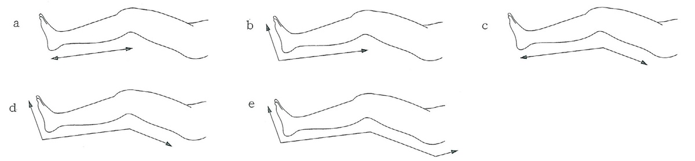
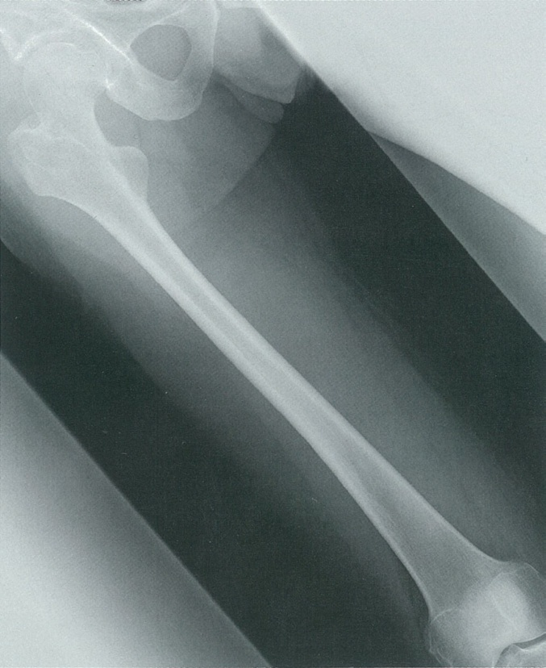
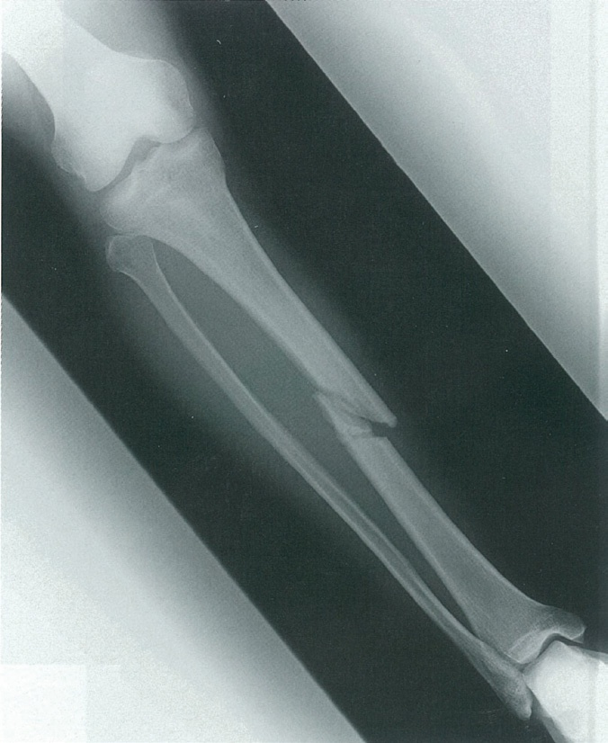
| 原則 | 理由 |
|---|---|
| ① 骨折部の上下1関節ずつを含めて固定する | 関節が動くと、そこに付く筋を介して骨折部に屈曲力と回旋力が伝わる。骨折部だけを当てても止まらない |
| ② 良肢位（機能肢位）で固定する | 足関節は直角（0°）——底屈位で固めると尖足拘縮になり歩けなくなる |
| ③ 末梢の循環・神経を必ず確認する | 固定の前後で、足背動脈の拍動・皮膚色・足趾の運動と感覚を記録する。指先は出しておいて観察できるようにする |
| ④ 全周性にきつく巻かない | 腫脹はこれから強くなる＝コンパートメント症候群。シーネ（半周）＋包帯が安全 |
| ⑤ 開放骨折なら創を清潔なガーゼで覆ってから固定 | 汚染を広げない。露出した骨を無理に押し込まない |
| 選択肢 | 解説 |
|---|---|
| ａ 足関節から膝関節まで（足部を含まない） | 骨折部の上下どちらの関節も十分に固定できていない。足部を含まないので足関節が自由に動いてしまい、上端も膝までなので膝関節をまたげていない。骨折部が動けば疼痛・出血・二次的な神経血管損傷を招く。 |
| ｂ 足部から膝関節まで | 足部を含むので足関節は固定できるが、上端が膝関節までしか届かず、膝をまたいでいない。脛骨骨幹部骨折では膝関節を越えて大腿部まで固定しなければ骨折部の回旋と屈曲を止められない。 |
| ｃ 足関節から大腿部まで（足部を含まない） | 上端は膝を越えていて良いが、足部を含まないため足関節が固定されない。下腿の副子は足底まで巻き込んで足関節を直角に保つのが基本で、これを外すと足関節が動くたびに骨折部にねじれが伝わる。 |
| ◯ ｄ 足部から大腿部まで | ◯ 骨折の応急固定は「骨折部の上下1関節ずつを含めて固定する」のが大原則。脛骨・腓骨骨幹部の骨折では、下は足関節（＝足部を巻き込む）、上は膝関節（＝大腿部まで届かせる）を固定するのが正解になる。足底を含めることで足関節を底屈・背屈させず直角位に保て、尖足の予防にもなる。 |
| ｅ 足部から大腿近位部（股関節部）まで | 足関節・膝関節は固定できるが、股関節まで巻き込むのは過剰である。不要な関節まで固定すると、装着に手間と時間がかかり、搬送・診察の妨げになり、拘縮と苦痛を増やす。（股関節まで含める固定が必要なのは大腿骨骨幹部骨折で、そのときは足部から体幹（骨盤）まで固定する。） |
| 誤り方 | 選ぶ肢 | 抜けている視点 |
|---|---|---|
| 上端しか見ていない | c | 足部を巻き込まないと足関節は固定されない（足関節は足部と下腿の間の関節） |
| 下端しか見ていない | b | 膝「まで」では膝をまたいでいない |
| 「広いほうが安全」と考える | e | 過剰固定は害。必要最小限の関節だけを止める |
| 手順 | 中身 |
|---|---|
| ① 洗浄とデブリドマン （最優先・くり返す） | 大量の生理食塩水で洗い、汚染組織・壊死組織・遊離骨片を徹底的に切除する。受傷から6〜8時間（golden period）以内に行う |
| ② 骨の固定は創外固定 | 創部から離れた健常な骨にピンを刺して外で連結するので創に異物を置かずに済み、洗浄・観察・再手術がしやすい |
| ③ 抗菌薬・破傷風予防 | 可及的早期に投与を開始する（洗浄・デブリドマンの代わりにはならない） |
| ④ 軟部組織が落ち着いてから | 植皮・皮弁による創閉鎖、内固定への変更、骨移植 |
| 急性期にやらないこと | プレート・髄内釘などの内固定（異物を汚染創に埋める）／人工骨移植（感染の温床）／一次的な創閉鎖・植皮 |
| 選択肢 | 解説 |
|---|---|
| ◯ ａ 創外固定 | ◯ 創部から離れた健常な骨にピンを刺し、体外のフレームで連結する固定法。汚染された創に異物（プレート・髄内釘）を置かずに済み、創の観察・洗浄・追加のデブリドマン・皮弁形成が自由にできる。広範な軟部組織損傷を伴う開放骨折の初期固定として第一選択である。 |
| ｂ 遊離植皮 | 植皮片は自前の血管を持たず、母床からの血流で生着するため、骨・腱が露出した創や、血流の乏しい挫滅組織の上には生着しない。また汚染・感染のある創に急いで蓋をすれば深部に感染を閉じ込める。創の被覆はデブリドマンを繰り返して清浄化してから、皮弁（血流を伴う組織）で行うのが原則。 |
| ｃ 人工骨移植 | 血流を持たない異物であり、汚染創ではバイオフィルムの温床になる。骨欠損の再建を考えるのは感染が制圧され軟部組織が治癒した後（数週〜数か月後）である。 |
| ◯ ｄ デブリドマン | ◯ 開放骨折の治療の中心。大量の生理食塩水による洗浄とともに、汚染組織・壊死組織・血流の途絶えた遊離骨片を徹底的に切除する。受傷から6〜8時間（golden period）以内に行い、必要なら48時間ごとに繰り返す。「細菌の量を物理的に減らす」ことが感染予防の本体で、抗菌薬はその補助にすぎない。 |
| ｅ プレート固定 | 汚染創に大きな金属異物を埋め込み、しかも骨膜を剝離して血流をさらに損なう。広範な軟部組織挫滅を伴う開放骨折では感染と骨髄炎を招くため、急性期には選ばない。内固定へ移すのは軟部組織が治癒し感染の徴候が無いことを確認してからである（本章 NO.115（115A-59）はこれを早まった症例）。 |
| 利点 | 中身 |
|---|---|
| 創に異物を置かない | ピンは創から離れた健常骨に刺す。バイオフィルムの足場を汚染部に作らない |
| 創が開いたまま管理できる | 観察・洗浄・追加デブリドマン・陰圧閉鎖療法・皮弁形成がいつでもできる |
| 短時間・低侵襲で装着できる | 多発外傷でショックがある患者でも「まず固定して出血と疼痛を抑える」ことができる（damage control orthopedics） |
| 長さ・軸・回旋を保てる | 後日の内固定への変換〈conversion〉がしやすい |
| 部位 | 典型的な受傷機転 | ひとこと |
|---|---|---|
| 椎体（脊椎圧迫骨折） | 尻もち・前屈み・持ち上げ。はっきりした外傷が無いこともある | 最も多い。胸腰椎移行部（Th11〜L2）に好発し、身長低下・円背として現れる |
| 大腿骨近位部 | 横向きに転倒して大転子を打つ | 最も予後を左右する（生命予後・ADL） |
| 橈骨遠位端（Colles骨折） | 前向きに転んで手をつく | フォーク状変形。比較的若い高齢者（60代）に多い |
| 上腕骨近位端 | 転倒して肩を打つ／手をつく | 4大骨折の1つ。多くは保存療法 |
| 膝蓋骨・足関節・脛骨・腓骨 | 直達外力やひねり | 骨粗鬆症に特徴的な「脆弱性骨折」の代表には入らない |
| 選択肢 | 解説 |
|---|---|
| ◯ ａ 脊 椎 | ◯ 骨粗鬆症性骨折で最も多い部位。椎体は海綿骨が主体で、加齢による骨量減少の影響を真っ先に受ける。尻もち・前屈み・持ち上げといった軽微な負荷で潰れ（圧迫骨折）、はっきりした転倒がなくても起こる。好発は胸腰椎移行部（Th11〜L2）。 |
| ｂ 膝蓋骨 | 膝を直接ぶつける直達外力で折れる骨で、骨粗鬆症に特徴的な脆弱性骨折の部位ではない。皮質骨主体で、加齢による骨量減少の影響も相対的に小さい。 |
| ｃ 足関節 | 足関節果部骨折は足をひねる（回外・回内＋回旋）ことで起こる。比較的若年〜中年に多く、脆弱性骨折の代表4部位には入らない。 |
| ◯ ｄ 橈骨遠位端 | ◯ 前向きに転んで手をついたときに折れる（Colles骨折）。とっさに手が出る＝比較的元気な高齢者（60代）に多く、骨粗鬆症の「最初の警告」になることが多い。遠位骨片が背側・橈側へ転位してフォーク状変形を呈する。 |
| ◯ ｅ 大腿骨近位部 | ◯ 横向きに転んで大転子を打ったときに折れる。骨粗鬆症性骨折のなかで最も生命予後とADLを左右する（1年以内の死亡率10〜20％、受傷前の歩行能力に戻れるのは約半数）。とっさに手が出せないほど反応が遅くなった高齢者に多い。 |
| 年代 | 多い骨折 | なぜ |
|---|---|---|
| 50〜60代 | 橈骨遠位端骨折（Colles骨折） | 閉経後で骨は弱いが、反応が速くとっさに手が出る |
| 60〜70代 | 椎体骨折 | 日常動作の負荷だけで潰れるようになる |
| 75歳以降 | 大腿骨近位部骨折 | とっさに手が出ず、体側から床に落ちる。筋力低下とバランス障害が加わる |
| 選択肢の骨 | 実際に指している骨折 | 脆弱性骨折か |
|---|---|---|
| 上腕骨 | 上腕骨近位端骨折（外科頸） | ◯ 4大部位 |
| 大腿骨 | 大腿骨近位部骨折（頸部・転子部） | ◯ 4大部位 |
| 橈骨 | 橈骨遠位端骨折（Colles骨折） | ◯ 4大部位 |
| （脊椎） | 椎体圧迫骨折 | ◯ 4大部位（この設問では選択肢に無い） |
| 脛骨・腓骨 | 骨幹部骨折・足関節果部骨折 | × 高エネルギー外傷やひねりで起こる |
| 選択肢 | 解説 |
|---|---|
| ◯ ａ 上腕骨 | ◯ 上腕骨近位端骨折は脆弱性骨折の4大部位の1つ。転倒して手をつく、あるいは肩を直接打つことで外科頸に骨折線が入る。多くは転位が小さく保存療法（三角巾・装具）で治るが、腋窩神経麻痺（三角筋の麻痺と肩外側の感覚障害）に注意する。 |
| ◯ ｂ 大腿骨 | ◯ 大腿骨近位部（頸部・転子部）骨折。横向きに転倒して大転子を打って生じ、高齢者の骨折のなかで最も生命予後とADLを左右する。可及的早期の手術と早期離床が原則。 |
| ◯ ｃ 橈 骨 | ◯ 橈骨遠位端骨折（Colles骨折）。前向きに転んで手をついたときに折れる、最も頻度の高い上肢の脆弱性骨折である。フォーク状変形を呈し、合併症として正中神経障害・複合性局所疼痛症候群〈CRPS〉が重要（本章 NO.118 参照）。 |
| ｄ 脛 骨 | 脛骨骨幹部・脛骨高原骨折は交通事故・転落・スポーツなどの比較的高いエネルギー外傷で起こる。高齢者が立位から転倒した程度では折れにくく、脆弱性骨折の代表部位ではない。 |
| ｅ 腓 骨 | 腓骨は荷重を分担しない骨で、折れるのは足関節をひねったとき（果部骨折）や直達外力が中心である。骨粗鬆症性骨折の好発部位には挙げられない。 |
| 項目 | 内容 |
|---|---|
| 受傷機転 | 転倒して手をつく／肩を直接打つ |
| 好発部位 | 外科頸（解剖頸で折れると骨頭壊死のリスク） |
| 症状 | 肩の痛み・腫脹、数日後に上腕から前腕内側にかけて広がる皮下出血 |
| 合併する神経障害 | 腋窩神経麻痺——三角筋の麻痺（外転不能）と肩関節外側の感覚障害 |
| 治療 | 転位が小さければ三角巾・装具で保存療法（大多数）。転位・粉砕が強ければ骨接合術や人工骨頭・リバース型人工肩関節 |
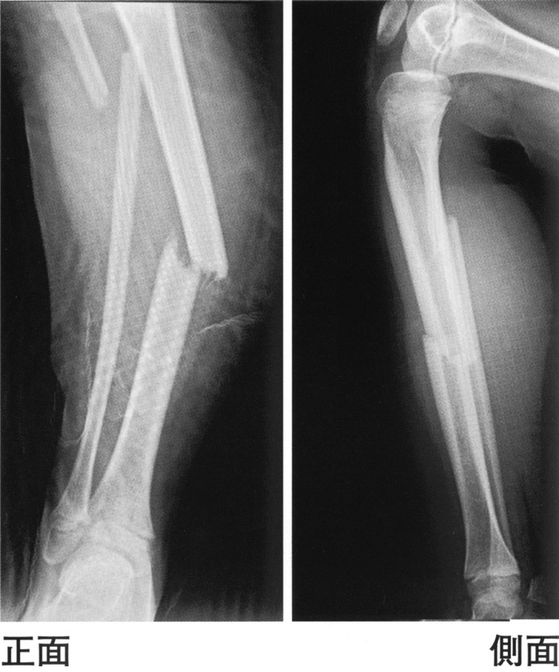
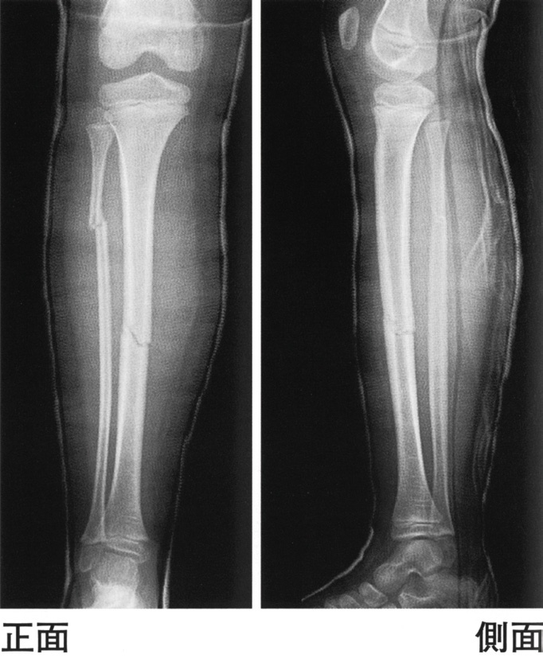
| 柱 | 指導内容 | 目的 |
|---|---|---|
| ① 荷重の制限 | 整復した骨折には荷重をかけない（免荷）。松葉杖・車椅子を使う | 再転位・変形治癒の防止 |
| ② 挙上 | 患肢を心臓より高く保つ | 腫脹の軽減 |
| ③ 固定していない関節は動かす | 足趾（手なら手指）の自動屈伸、ギプスの外の関節の可動域運動、等尺性の筋収縮 | 腫脹軽減・拘縮予防・筋萎縮予防・深部静脈血栓症予防 |
| ④ 危険信号を教える | 増強する痛み・しびれ・指趾の色調変化・冷感・動かせない → 昼夜を問わずすぐ受診。ほかにギプス内の掻痒・悪臭・浸出液（褥瘡・感染）、ギプスを濡らさない、中に物を入れない | コンパートメント症候群・ギプス障害（褥瘡・神経麻痺）の早期発見 |
| 選択肢 | 解説 |
|---|---|
| ◯ ａ 「右足に体重をかけて大丈夫です」 | ◯ 誤っている＝正解。徒手整復とギプス固定を行った直後の脛骨・腓骨骨幹部骨折に荷重を許可してはいけない。整復した骨片が再びずれ（再転位）、変形治癒や偽関節につながる。この時期は免荷とし、松葉杖などで移動させる（荷重は骨癒合の進行を画像で確認しながら段階的に許可していく）。 |
| ｂ 「右足趾の屈伸運動をしっかり行ってください」 | 正しい。足趾を動かすことで筋ポンプが働き、静脈還流とリンパ還流が促されて腫脹が引く。関節拘縮と筋萎縮の予防にもなる。ギプスで固定していない関節は積極的に動かすのが原則である。 |
| ｃ 「右足趾の色調を定期的にチェックしてください」 | 正しい。ギプス固定後に最も警戒すべきはコンパートメント症候群と循環障害で、ギプスから出ている足趾の色（蒼白・チアノーゼ）・腫脹・冷感が唯一の窓になる。だから指趾はギプスから出しておく。 |
| ｄ 「できるだけ右下肢を高く挙げて過ごしてください」 | 正しい。受傷後の腫脹を軽減するため、患肢を心臓より高く挙上するのは標準的な指導である。（ただしコンパートメント症候群を疑った段階では挙上をやめて心臓の高さに保つ——挙上すると灌流圧が下がるため。「腫脹の予防では挙上、虚血を疑ったら心臓の高さ」と使い分ける。） |
| ｅ 「右足趾の感覚異常や疼痛が現れたらすぐに受診してください」 | 正しい。むしろ最も大切な指導。ギプス固定後に増強する疼痛としびれはコンパートメント症候群の初期症状であり、「夜間でも構わずすぐ受診してよい」と伝えておくことがVolkmann拘縮を防ぐ。本章 NO.112・116 はこれが守られなかった症例である。 |
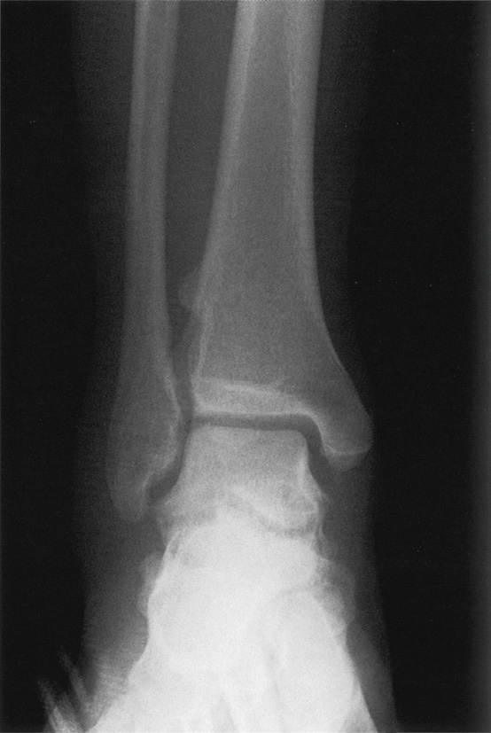
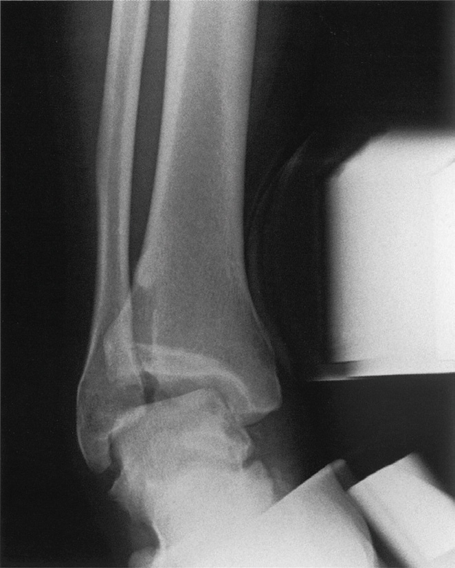
| 外側の靱帯 | 損傷されやすさ | testing |
|---|---|---|
| 前距腓靱帯〈ATFL〉 | 最も多い（単独損傷が大半） | 前方引き出しテスト |
| 踵腓靱帯〈CFL〉 | 2番目。ATFLとの合併損傷 | 内反ストレステスト（距骨傾斜角） |
| 後距腓靱帯〈PTFL〉 | まれ | — |
| 選択肢 | 解説 |
|---|---|
| ａ 強 直 | 強直〈ankylosis〉は関節そのものが骨性・線維性に癒合して可動域がゼロになった状態で、関節リウマチ・化膿性関節炎・強直性脊椎炎の末期や関節固定術後にみられる。昨日受傷した外傷で起こる変化ではない。 |
| ｂ 拘 縮 | 拘縮〈contracture〉は関節周囲の軟部組織（皮膚・筋・腱・関節包）が短縮して可動域が制限された状態で、長期の固定や不動の後に生じる。受傷翌日の急性期の所見ではなく、またストレス撮影が示しているのは「動きすぎ」であって「動かない」ではない。 |
| ｃ 破 壊 | 関節面の軟骨と骨が失われる変化で、関節リウマチ・化膿性関節炎・進行した変形性関節症でエックス線上の関節裂隙狭小化・骨びらんとして現れる。本例の通常エックス線（A）に骨傷や関節裂隙の異常は無い。 |
| ｄ 変 形 | 骨や関節のかたちそのものが恒久的に変わった状態を指す（変形性関節症の内反変形、外反母趾、変形治癒など）。本例は安静時のエックス線（A）では正常な関節の対応関係を保っており、力を加えたときにだけ異常が現れる。 |
| ◯ ｅ 不安定性 | ◯ 通常のエックス線（A）は正常だが、受傷肢位（内反）を強制したストレス撮影（B）では距骨が傾いて関節が開大している——靱帯損傷による不安定性である。足関節捻挫の大多数は内反捻挫で、前距腓靱帯（次いで踵腓靱帯）が損傷される。「安静時には分からず、力を加えて初めて現れる異常」＝不安定性で、ストレス撮影はまさにそれを検出するための撮影法である。 |
| 用語 | 定義 | 代表 |
|---|---|---|
| 強直〈ankylosis〉 | 関節面同士が癒合して可動域が失われる（関節内の問題） | 関節リウマチ末期・化膿性関節炎後・関節固定術後 |
| 拘縮〈contracture〉 | 関節周囲の軟部組織が短縮して可動域が減る（関節外の問題） | 長期固定後・熱傷後・Volkmann拘縮・Dupuytren拘縮 |
| 破壊 | 関節軟骨と軟骨下骨が失われる | 関節リウマチ・化膿性関節炎・神経病性関節症 |
| 変形 | 骨・関節の形態が恒久的に変わる | 変形性関節症・変形治癒・外反母趾 |
| 不安定性〈instability〉 | 支持機構（靱帯）が破綻し、生理的でない方向・量の動きが生じる | 靱帯損傷（ACL・足関節外側靱帯）・反復性脱臼 |
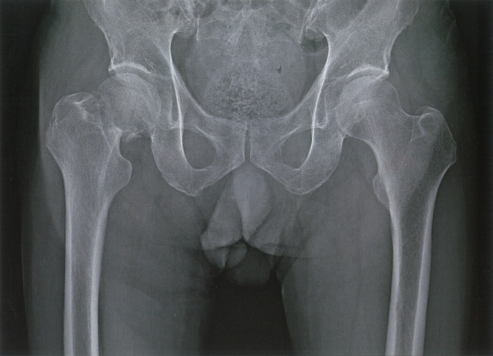
| 大腿骨頸部骨折（内側骨折） | 大腿骨転子部骨折（外側骨折） | |
|---|---|---|
| 部位 | 関節包の内側 | 関節包の外側 |
| 血流 | 骨頭を養う内側大腿回旋動脈が切れやすい＝骨頭壊死・偽関節が起こりやすい | 海綿骨が豊富で血流もよく骨癒合しやすい |
| 出血・腫脹 | 関節包内なので外からは目立たない | 皮下出血・腫脹が目立ち、出血量も多い |
| 手術 | 転位が小さければ骨接合術、転位が大きい／高齢なら人工骨頭置換術 | 骨接合術（髄内釘・スライディングヒップスクリュー） |
| どちらも「可及的早期（原則48時間以内）の手術で離床を早める」が大原則。長期臥床・牽引は肺炎・褥瘡・深部静脈血栓症・認知機能低下・廃用を招き、生命予後を悪くする | ||
| 選択肢 | 解説 |
|---|---|
| ａ 介護施設への転送 | 治療を放棄して生活の場を移すという発想は、まず治療方針を立てるべきこの段階では誤りである。本例は90歳だが受傷前は補助具なしで自立歩行していた（＝手術に耐え、回復も見込める）。年齢だけを理由に治療を諦めてはいけない。 |
| ◯ ｂ 可及的早期の手術 | ◯ 大腿骨近位部骨折の標準治療は「できるだけ早い手術と早期離床」。原則48時間以内（遅くとも数日以内）に手術することで、疼痛が取れて座位・立位が可能になり、肺炎・褥瘡・深部静脈血栓症・せん妄・廃用といった「臥床がもたらす合併症」を断ち切れる。手術は骨をつなぐためというより、安全に離床させるために行うと考えるとよい。 |
| ｃ 車椅子での生活自立訓練 | 歩けないことを前提にした計画である。本例は受傷前に補助具なしで歩けていたのだから、目標は歩行能力の回復であるべきで、この段階で車椅子生活へ切り替える理由がない。 |
| ｄ 約1 か月の局所牽引療法 | 高齢者に1か月の臥床を強いる＝最悪の選択である。その間に肺炎・褥瘡・深部静脈血栓症・せん妄・不可逆的な筋力低下が起こり、骨が治っても歩けなくなる。さらに牽引だけでは頸部骨折の癒合は期待できない。 |
| ｅ ギプス包帯による右股関節固定 | 股関節を含むギプス（スパイカギプス）は、排泄も清潔保持もできず、褥瘡・拘縮・呼吸機能低下を招く。高齢者の大腿骨近位部骨折に用いる固定法ではない。 |
| 読むべき情報 | 本例 | 意味 |
|---|---|---|
| 受傷前のADL・歩行能力 | 補助具なしで自立歩行 | 手術して元の生活に戻せる可能性が高い |
| 全身状態・併存疾患 | バイタル安定、心肺・腹部に異常なし | 麻酔・手術に耐えられる |
| 認知機能 | 意識清明 | 術後リハビリテーションに参加できる |
| 他の外傷 | 頭部・四肢に創傷なし、麻痺なし | 骨折の治療に集中してよい |
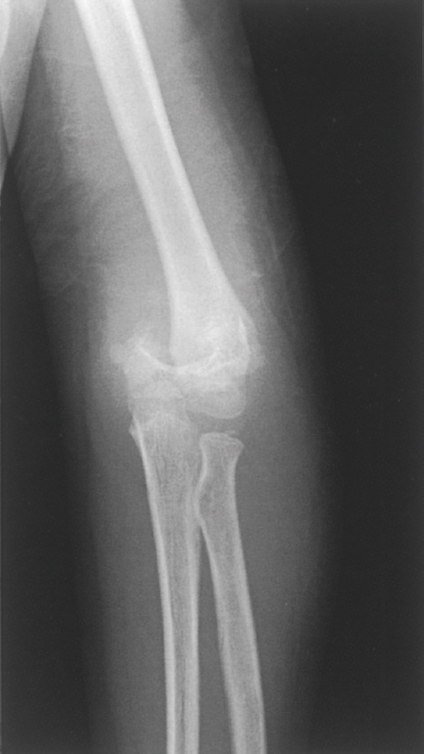
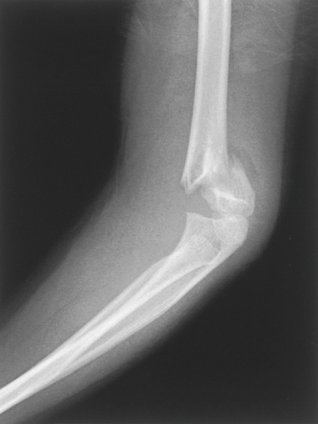
| 指標 | 測っているもの | 使えるか |
|---|---|---|
| 区画内圧 | 病態そのもの（30mmHg以上／ΔP<30mmHg） | ◯ 最も客観的。意識がない・小児など訴えが取れない患者では必須 |
| 他動伸展時痛 | 虚血に陥った筋の反応 | ◯ 最も早く鋭敏。ただし小児では評価が難しい |
| 末梢の拍動・皮膚色・冷感 | 循環（末期の変化） | ◯ ただし遅い。消失＝切迫 |
| 自動運動・感覚 | 神経筋の機能 | ◯ 本例では「手指の自動運動が不能」＝すでに進行している |
| 創の有無・転位の程度・皮下出血 | 骨折そのものの性状 | × 区画内圧を反映しない |
| 選択肢 | 解説 |
|---|---|
| ａ 創の有無 | 開放骨折か閉鎖骨折かの区別で、感染対策（洗浄・デブリドマン・抗菌薬）の指標である。むしろ創があれば区画が外へ開放されて内圧が逃げるため、閉鎖骨折のほうがコンパートメント症候群を起こしやすいことすらある。 |
| ｂ 転位の程度 | 整復の必要性や手術方法を決める指標であって、区画内の圧が上がっているかどうかは教えてくれない。転位が小さくてもコンパートメント症候群は起こるし、大きくても起こらないことがある。 |
| ◯ ｃ 橈骨動脈の拍動 | ◯ 患肢の循環を直接評価する所見であり、虚血の進行度を判断する指標になる。拍動の減弱・消失は「区画内圧が動脈圧に迫るほど上がった」ことを意味し、緊急減圧の強い根拠となる。ただし最も遅く現れる徴候なので、「触れるから大丈夫」とは決して言えない——触れなくなった時点ではすでに切迫している。 |
| ｄ 皮下出血の有無 | 受傷の程度をうかがわせるだけの所見で、皮下出血があっても区画内圧が上がっているとは限らず、なくても上がっていることがある。定量的な指標にはならない。 |
| ◯ ｅ 前腕筋区画内圧 | ◯ コンパートメント症候群の病態そのものを直接測る、最も客観的で確実な指標。区画内圧30mmHg以上、あるいは拡張期血圧との差〈ΔP〉が30mmHg未満が筋膜切開の目安になる。小児は痛みの訴えが不確かで診察所見だけでは判断しにくいため、とくに測定の意義が大きい。 |
| 小児の壁 | 中身 |
|---|---|
| 痛みの表現が不確か | 「どこがどう痛いか」を言えず、骨折そのものの痛みと区別できない |
| 診察に協力できない | 泣いて暴れるため他動伸展時痛も感覚検査も取れない |
| 代わりの手がかり | 3つのA——Anxiety（不安・興奮）、Agitation（落ち着かない）、increasing Analgesic requirement（鎮痛薬の要求が増える） |
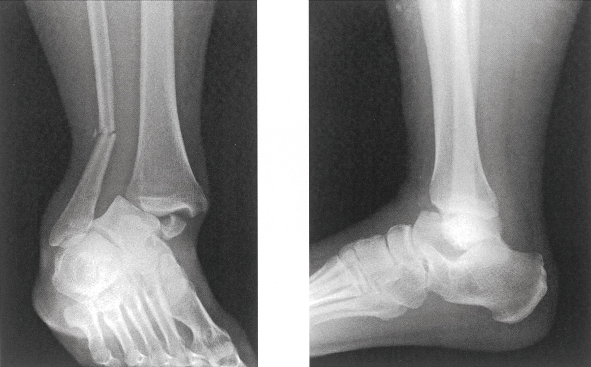
| 整復が遅れると | 機序 |
|---|---|
| 皮膚壊死（→開放骨折化） | 足関節周囲は皮下組織が極めて薄く、転位した骨・距骨が内側から皮膚を押し続けて阻血に陥る。閉鎖骨折だったものが数時間で開放創になる |
| 関節軟骨の壊死 | 脱臼位では軟骨面の一部だけに荷重が集中し、滑液からの栄養も途絶える |
| 神経血管障害 | 後脛骨動脈・脛骨神経が牽引・圧迫され続ける |
| 疼痛・腫脹の増悪 | 整復するだけで疼痛は劇的に軽減し、腫脹の進行も止まる。結果として確定手術も早くできる |
| 選択肢 | 解説 |
|---|---|
| ａ テーピング固定 | 靱帯損傷（捻挫）の支持に用いるもので、脱臼・骨折を整復する力はない。脱臼したまま固定すれば、皮膚壊死・軟骨損傷・神経血管障害が進むだけである。 |
| ｂ 抗菌薬投与 | 「右足関節周囲に開放創はない」と明記されている——つまり閉鎖性の損傷である。創がなければ細菌の侵入経路もなく、予防的抗菌薬の適応はない。（開放骨折なら答えは変わる。） |
| ｃ 血行再建 | 「足背動脈は左右差なく触知可能」と明記されており、末梢の血行は保たれている。血行再建は動脈が損傷・閉塞している場合の手術で、この段階の適応はない。（ただし整復が遅れれば血行障害は起こりうる——だからこそ早く整復する。） |
| ｄ 大量輸液 | 血圧124/76mmHg・心拍数100/分・SpO2 100％と循環は安定しており、「右足関節以外に異常を認めない」＝出血源となる他部位の外傷もない。ショックではないので大量輸液の適応はない。 |
| ◯ ｅ 整 復 | ◯ 足関節の変形＋エックス線での脱臼（骨折）＝脱臼骨折であり、初期対応は速やかな整復である。脱臼したままでは、①皮膚が骨に押されて内側から壊死する（足関節は皮下組織が薄い）、②関節軟骨が圧迫され続けて壊死する、③神経血管が牽引・圧迫され続ける——これらはすべて時間とともに不可逆になる。確定的な骨接合手術は腫脹が引いてから行うとしても、整復だけは「今すぐ」行う。 |
| 記載 | 否定される選択肢 |
|---|---|
| 右足関節周囲に開放創はない | b 抗菌薬投与 |
| 足背動脈は左右差なく触知可能 | c 血行再建 |
| 血圧124/76、右足関節以外に異常なし | d 大量輸液 |
| 右足趾の自動運動可能・感覚正常 | 神経損傷を否定 |
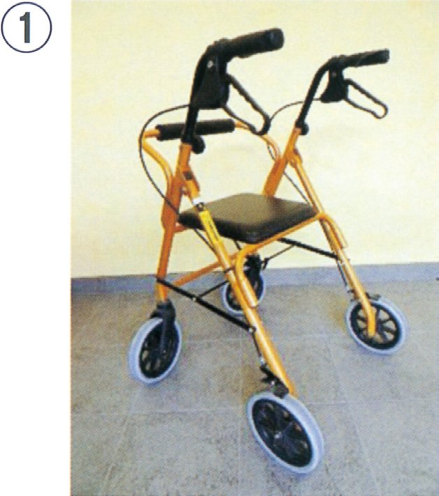
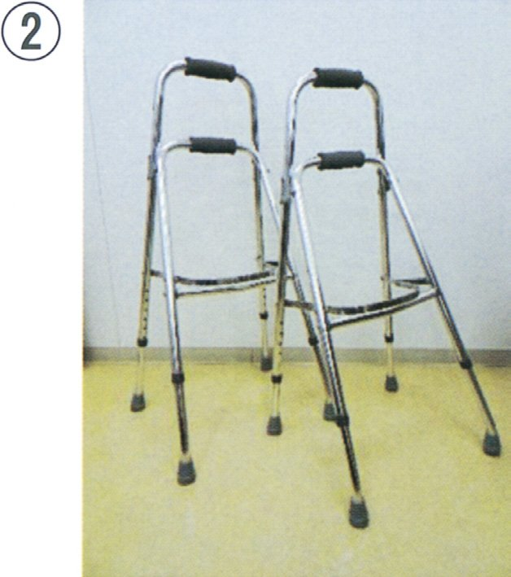
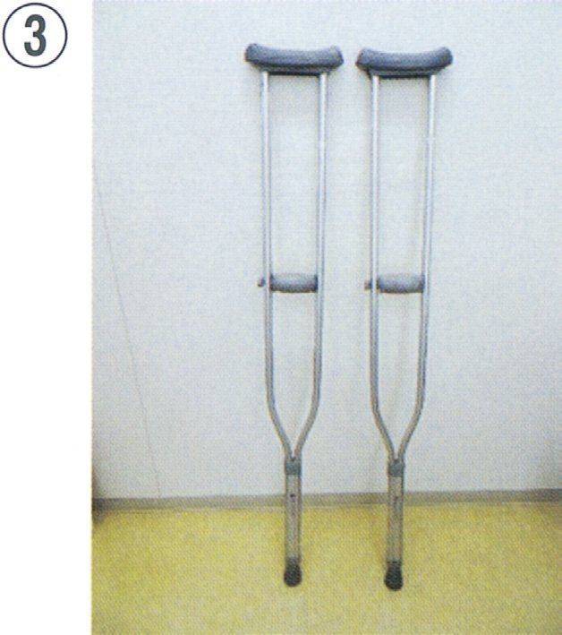
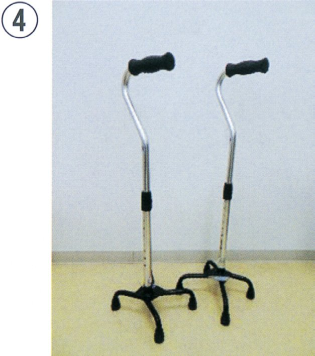
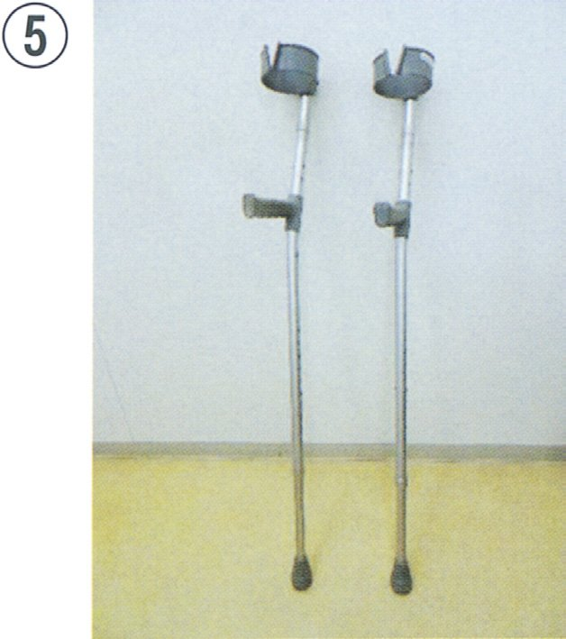
| 補助具 | 支持性 | 主な用途 |
|---|---|---|
| T字杖（1本杖） | 体重の約20〜25％ | 軽度の支持。健側の手に持つ |
| 多脚杖（4点杖） | 体重の約25％（安定性は高い） | 片麻痺など。不整地には不向き |
| ロフストランド杖 （前腕支持型） | 体重の約40〜50％ | 部分荷重。長期使用（対麻痺など） |
| 松葉杖（腋窩支持型） | 体重の80〜100％＝完全免荷が可能 | 骨折後・術後の免荷。屋外歩行にも耐える |
| 固定式歩行器 | 高い（持ち上げて進む） | 屋内の短距離 |
| 歩行車（4輪・座面付き） | 高いが両下肢荷重が前提 | 高齢者の歩行安定・休息 |
| 選択肢 | 解説 |
|---|---|
| ａ ①（4輪と座面を備えた歩行車） | 両手でハンドルを押して体重を預ける歩行車で、支持性は高いが、両下肢で体重を支えながら歩くことが前提である。片脚を完全に浮かせたまま進むことはできない。主に高齢者の歩行の安定化と休息（座面）のために用いる。 |
| ｂ ②（固定式歩行器〈ピックアップウォーカー〉） | 4脚のフレームを持ち上げて前に置き、そこへ進むという使い方をする。屋内での短距離移動には向くが、持ち上げて進むため速度が遅く、不整地や段差のある屋外歩行には適さない。完全免荷も原理的には可能だが、屋外歩行という条件で外れる。 |
| ◯ ｃ ③（松葉杖〈腋窩支持型クラッチ〉） | ◯ 両側の松葉杖を使えば、体重をすべて上肢と健側下肢に預けて患側を完全に浮かせたまま歩ける（完全免荷歩行＝3点歩行・振り出し歩行）。支持性が高く、屋外の距離のある歩行にも耐えるため、骨折後や術後の片側完全免荷では第一選択となる。腋窩に体重をかけると橈骨神経麻痺（松葉杖麻痺）を起こすので、「握りで支え、腋窩は挟むだけ」と指導する。 |
| ｄ ④（多脚杖〈4点杖〉） | 杖1本で支えられる体重はせいぜい体重の20〜25％で、完全免荷は不可能である。多脚杖は接地面積が広く安定性が高いぶん、片麻痺患者などの部分的な支持に用いる。また脚が多いため不整地では逆に安定しない。 |
| ｅ ⑤（ロフストランド杖〈前腕支持型クラッチ〉） | 前腕のカフで支えるため松葉杖より扱いやすく手が自由になるが、支持できる体重は松葉杖より小さく、完全免荷を長距離続けるには不向きである。部分荷重の時期や、長期に杖を使う患者（対麻痺など）に適する。 |
| 項目 | 基準 |
|---|---|
| 長さ | 腋窩前壁から指2〜3横指（約3〜5cm）下。身長−約40cmが目安 |
| 握りの高さ | 肘が約30°屈曲する位置（伸びきると体重を支えられない） |
| 体重をかける場所 | 握り（手掌）で支える。腋窩に体重をかけると橈骨神経が圧迫され「松葉杖麻痺」＝下垂手を起こす |
| 完全免荷の歩き方 | 3点歩行（両杖→患肢は浮かせたまま→健肢）／振り出し歩行（両杖を出して体を振り出す） |
| 階段 | 上りは健側から、下りは患側（と杖）から——「行きはよいよい（健）、帰りはこわい（患）」 |
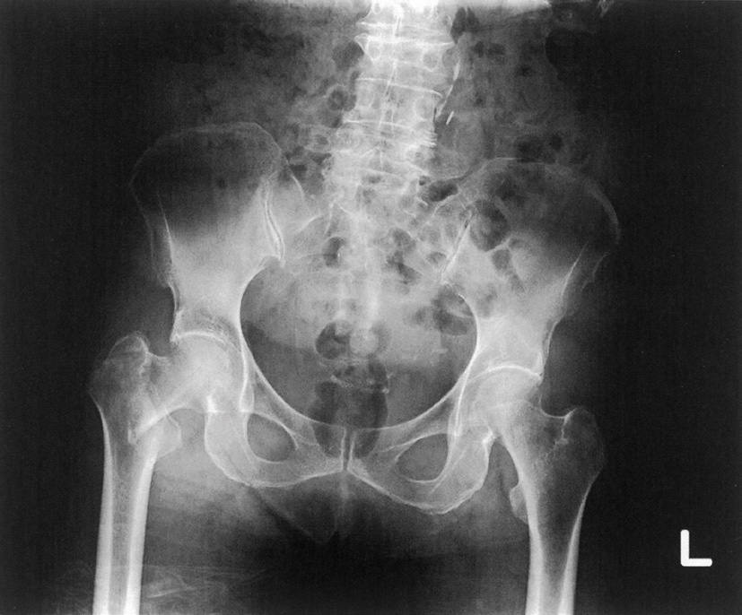
| 所見 | 中身 |
|---|---|
| 起立・歩行不能 | 最も重要。転倒後に立てない高齢者はまずこれを疑う |
| 患肢の短縮と外旋位 | 転位のある骨折で典型的（大殿筋・外旋筋群に引かれる） |
| 股関節の運動時痛 | 下肢を動かす・回旋させると鼠径部に痛みが走る。踵を叩くと股関節に響く（軸圧痛） |
| 外見上の変化に乏しいことがある | 頸部骨折は関節包内なので皮下出血・腫脹が目立たない（転子部骨折では腫脹・皮下出血が出る） |
| 歩けてしまう例がある | 転位のない不全骨折では歩行可能なことがあり、初回エックス線でも写らない。疑いが強ければCT・MRI、あるいは数日後の再検 |
| 選択肢 | 解説 |
|---|---|
| ａ 恥骨骨折 | 骨粗鬆症の高齢者に起こりうるが、恥骨単独骨折は歩行できることも多く、疼痛は鼠径部・恥骨部に限局する。股関節の運動時痛を主症状とする骨折ではない。 |
| ｂ 坐骨骨折 | 坐骨結節の裂離骨折は若年スポーツ選手の損傷で、高齢者の転倒でこの部位だけが折れることは少ない。痛みは殿部・坐位で強くなる。 |
| ｃ 腸骨骨折 | 交通事故や高所転落など高エネルギー外傷で起こる骨盤骨折の一部で、大量出血とショックを伴いやすい。自宅の玄関での転倒で単独に起こる骨折ではない。 |
| ｄ 股関節脱臼 | ダッシュボード損傷のような強大な外力で生じる。後方脱臼なら屈曲・内転・内旋位に弾発性固定され、エックス線で骨頭が臼蓋から完全に外れる。低エネルギー外傷では起こらない。 |
| ◯ ｅ 大腿骨近位部骨折 | ◯ 高齢女性＋自宅内の転倒（低エネルギー外傷）＋起立歩行不能＋股関節の運動時痛——大腿骨近位部骨折の典型像である。「下肢に腫脹を認めず圧痛もはっきりしない」という記載は、下腿の骨折や軟部組織損傷を否定して、痛みの主座が股関節にあることを示している。エックス線でも大腿骨近位部に骨折線と転位が確認できる。 |
| NO.134（111H-22・2017年） | NO.114（117E-34・2023年） | |
|---|---|---|
| 患者 | 77歳女性 | 77歳女性（同じ） |
| 状況 | 自宅の玄関で倒れているところを発見 | 同じ |
| バイタル | 心拍92／血圧170/100／SpO2 100％ | 同じ |
| 選択肢 | a恥骨／b坐骨／c腸骨／d股関節脱臼／e大腿骨近位部 | 同じ |
| 正答率 | 91％ | 93％ |
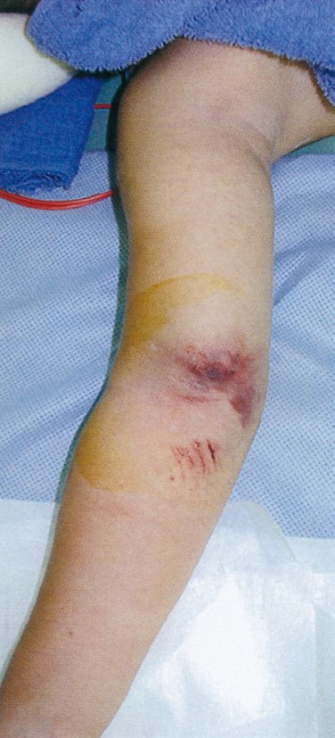
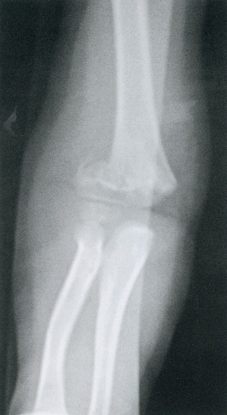
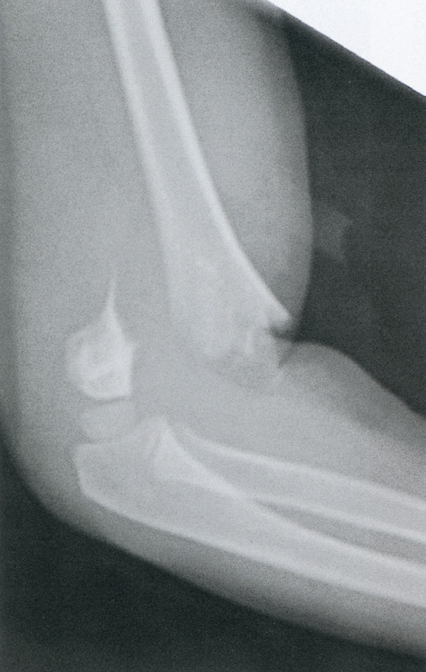
| 疾患 | 年齢・機転 | 所見 | 注意 |
|---|---|---|---|
| 上腕骨顆上骨折 | 5〜8歳。手をついて肘が過伸展 | 肘の著明な腫脹・変形。側面像で骨片が後方転位 | コンパートメント症候群→Volkmann拘縮／正中・橈骨・尺骨神経麻痺 |
| 上腕骨外側顆骨折 | 4〜10歳。内反力 | 外側の限局した腫脹・圧痛。骨端核を含む関節内骨折 | 関節内骨折で自然矯正が効かず、偽関節・外反肘・遅発性尺骨神経麻痺を残す |
| 肘内障 | 1〜4歳。手を引っ張られた | 腫脹・変形なし。回内位で腕を下げたまま使わない | 徒手整復で即座に使い出す |
| 肘関節脱臼 | 学童以降。手をついて過伸展 | 肘頭の後方突出・弾発性固定。エックス線で尺骨・橈骨が上腕骨と関節を失う | 整復後に不安定性・神経血管損傷を確認 |
| Monteggia骨折 | 学童 | 尺骨骨幹部骨折＋橈骨頭脱臼の組合せ | 橈骨頭脱臼を見落としやすい |
| 選択肢 | 解説 |
|---|---|
| ａ 動脈造影 | 動脈の断裂・閉塞を疑うときの検査である。本例は橈骨動脈が触知でき（弱いが）、皮膚色や末梢冷感の記載もないため、主たる病態は動脈の断裂ではなく区画内圧の上昇と考えられる。侵襲的で時間もかかり、優先度は低い。 |
| ｂ 右肘部CT | 骨折の詳細な形態（粉砕・関節内への進展）を評価する検査で、手術計画には役立つが、区画内圧は分からない。本例で急ぐのは骨の情報ではなく、筋と神経に血が流れているかどうかである。 |
| ｃ 右肘部MRI | 軟部組織の評価に優れるが、撮像に時間がかかり、小児では鎮静も必要になる。その間に筋が壊死してしまうので、一刻を争う病態には不向きである。 |
| ◯ ｄ 区画内圧測定 | ◯ 他動伸展時痛・強い腫脹・自動運動の低下・橈骨動脈拍動の減弱——コンパートメント症候群を強く疑う所見がそろっている。確定診断と筋膜切開の判断のために区画内圧を測定するのが次の一手である。6歳児で「痛みが強く泣き止まず」検査に協力できない＝臨床所見だけでは判断しきれないため、客観的な数値の価値がとくに高い。30mmHg以上、あるいはΔP<30mmHgなら緊急筋膜切開へ進む。 |
| ｅ 前腕周囲径計測 | 腫脹の程度を数字にできるが、周囲径と区画内圧は相関しない。皮下の浮腫でも周囲径は増えるし、逆に周囲径がさほど増えなくても筋膜下の圧は上がりうる。治療方針を変える情報にならない。 |
| 症例 | 所見 | 正解 |
|---|---|---|
| NO.135（本問・109I-61） | 他動伸展時痛あり、腫脹強い、橈骨動脈は「触知できるが弱い」、指の動きは「少ない」 | 区画内圧測定 （＝進行中。数値で確定させて切開へ） |
| NO.112（118A-37） | 他動伸展で激痛、自動屈伸「不能」、橈骨動脈「触知しない」、受傷から8時間 | 筋膜切開 （＝完成している。測る時間が惜しい） |
| NO.131（114A-71） | 前腕痛が出現し手指の自動運動が不能になった直後 | 判断の指標＝橈骨動脈の拍動と区画内圧 |
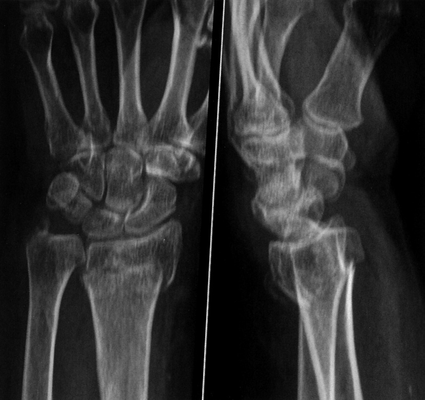
| 合併症 | 症状 | 対応 |
|---|---|---|
| 循環障害・ コンパートメント症候群 | 増強する疼痛（鎮痛薬が効かない）、指趾の腫脹・チアノーゼ・蒼白・冷感、他動伸展時痛、しびれ | ただちにギプスを割って除去。改善しなければ区画内圧測定→筋膜切開 |
| 神経麻痺（圧迫） | 腓骨頭（総腓骨神経→下垂足）、肘部（尺骨神経）、橈骨頭（後骨間神経）の限局した圧迫 | ギプスの除圧・作り直し |
| 褥瘡（ギプス潰瘍） | 限局した持続する痛み、ギプス内の悪臭・浸出液・発熱 | 窓開け（有窓化）または巻き直し |
| 関節拘縮・筋萎縮・廃用性骨萎縮 | 固定期間が長いほど | 固定していない関節は動かす。等尺性収縮を続けさせる |
| 選択肢 | 解説 |
|---|---|
| ａ 患肢挙上 | 受傷後の腫脹予防としては正しいが、いま起きている循環障害への対応としては不十分かつ有害でありうる。虚血が疑われる状態で患肢を挙上すると動脈圧が下がり、かえって灌流圧が落ちる。この段階でまずすべきは締めつけを外すことである。 |
| ◯ ｂ ギプス除去 | ◯ ギプス固定後6時間で腫脹が進行し、指尖のチアノーゼと鎮痛薬が効かない疼痛が出現——ギプスによる循環障害・コンパートメント症候群である。原因は外からの締めつけなのだから、ただちにギプスを割って（全周性に）除去するのが第一手で、これだけで内圧が下がり症状が改善することが多い。除去は「ためらわずに、その場で」行う——整復位が崩れることを恐れて残せば、手が失われる。除去後も改善しなければ区画内圧測定・筋膜切開へ進む。 |
| ｃ オピオイド投与 | 最も危険な対応である。「鎮痛薬が効かない痛み」はコンパートメント症候群の警告そのものであり、より強い鎮痛薬でその警告を消してしまえば、虚血の進行に気づけなくなる。痛みは原因を取り除いて消すのが正しい。 |
| ｄ ウロキナーゼ投与 | 血栓溶解薬であり、動脈血栓・塞栓による急性動脈閉塞に用いる。本例の病態は血栓ではなく、ギプスによる外部からの物理的圧迫なのでまったく的外れであり、骨折・手術直後の出血リスクからも避けるべきである。 |
| ｅ 星状神経節ブロック | 交感神経を遮断して上肢の血流を増やす手技で、複合性局所疼痛症候群〈CRPS〉や血管攣縮性疾患に用いる。物理的な圧迫が原因である本例では、締めつけを外さないかぎり血流は戻らない。（CRPSは数週〜数か月かけて生じる慢性の病態で、6時間後の急性所見とは時間軸が違う。） |
| その痛みが示す病態 | 確かめること |
|---|---|
| コンパートメント症候群 | 他動伸展時痛、緊満した腫脹、区画内圧 |
| 急性動脈閉塞 | 拍動消失・蒼白・冷感・感覚運動障害（5P） |
| 創部感染・壊死性軟部組織感染症 | 発熱・CRP上昇・握雪感・皮膚所見に不釣り合いな激痛 |
| ギプス褥瘡 | 限局した圧痛・悪臭・浸出液 |
| 危険因子 | 本例 |
|---|---|
| 認知症・せん妄 | 認知症あり。急性疾患での入院と環境変化はせん妄を誘発する |
| 環境の不慣れ | 2日前に入院したばかり。夜間で暗い |
| 回復期の活動再開 | 本日平熱となり動けるようになった＝「動けるが、まだ弱っている」最も危険な時期 |
| 加齢による筋力・バランス低下 | 88歳・要介護3 |
| 薬剤 | 睡眠薬・向精神薬・降圧薬・利尿薬（本例では不明） |
| 選択肢 | 解説 |
|---|---|
| ａ 胸部造影CT | 肺血栓塞栓症や大動脈解離を疑うときの検査だが、呼吸音は正常、SpO2の異常も胸痛の訴えもなく、循環も安定している。「左下肢を動かすと痛い」という局在をまったく説明できない。 |
| ｂ 腹部超音波検査 | 腹腔内出血や腹部大動脈瘤を疑うときの検査。「腹部は平坦・軟で圧痛を認めない」と明記されており、眼瞼結膜にも貧血の所見がない。痛みの局在は腹部ではない。 |
| ｃ 下肢静脈超音波検査 | 深部静脈血栓症を疑うときの検査で、入院・臥床という背景からは考えたくなる。しかし本例の痛みは「転倒した直後から」始まっており、しかも「動かすと増強する」＝動作時痛である。DVTの痛みは安静時にも持続する腫脹・熱感・圧痛で、浮腫も両側性（左右差なし）なので合わない。 |
| ｄ 胸部エックス線撮影 | 肺炎の経過観察や肋骨骨折の検索にはなるが、本日朝に平熱となり呼吸音も正常で、左下肢の痛みを説明できない。 |
| ◯ ｅ 股関節エックス線撮影 | ◯ 高齢者がベッドから転落し、左下肢を動かすと疼痛が増強する——大腿骨近位部骨折を第一に疑う。まず単純エックス線で確認するのが正解である。認知症があって「どこが痛い」と言えない患者では、「動かすとどこが痛むか」という他覚的な情報がほぼ唯一の手がかりになる。痛みの局在（左下肢）に対応する部位を撮るのが検査選択の基本である。 |
| 手がかり | 中身 |
|---|---|
| ① 動かして誘発する | 各関節を他動的に動かし、どの動きで痛がるか・表情が変わるかを見る。本例の「左下肢を動かすと疼痛が増強」がこれ |
| ② 視診・触診で左右を比べる | 腫脹・変形・皮下出血・短縮と外旋・熱感。健側との比較が最も確実 |
| ③ 状況から想定する | 転倒後の高齢者なら大腿骨近位部骨折・橈骨遠位端骨折・上腕骨近位端骨折・脊椎圧迫骨折・頭部外傷 |
| 選択肢 | 解説 |
|---|---|
| ◯ ａ 感 染 | ◯ golden period とは「この時間内に洗浄・デブリドマンを行えば創部感染を大幅に減らせる」という、感染予防のための時間概念である。受傷直後、創に入った細菌はまだ増殖しきっておらず、組織にも定着していない。6〜8時間を過ぎると細菌が対数増殖期に入り、組織内へ深く侵入して洗い流せなくなる——だからこの時間内に大量洗浄と汚染・壊死組織の切除を済ませることが決定的に重要になる。 |
| ｂ 出血傾向 | 凝固因子の欠乏や血小板減少による全身の止血障害で、開放骨折そのものの合併症ではない。（大量出血に対する大量輸血で希釈性の凝固障害が起こることはあるが、それは「6〜8時間」という区切りで語られる問題ではない。） |
| ｃ 循環不全 | 血管損傷による阻血は確かに時間との勝負だが、その限界は6〜8時間よりもっと短い（一般に阻血許容時間は6時間程度で、できるだけ早く血行再建する）。またgolden period という語は、慣用的に開放創の感染予防を指して使われる。 |
| ｄ 骨癒合不全 | 数か月かけて判明する慢性の合併症である。確かに初期治療の質（血流の温存・確実な固定・感染の回避）が骨癒合を左右するが、「6〜8時間」という短い時間で決着するものではない。 |
| ｅ 深部静脈血栓 | 長期臥床・下肢固定によって数日から数週の経過で生じる。予防は早期離床・弾性ストッキング・間欠的空気圧迫・抗凝固薬であって、受傷直後の数時間で決まるものではない。 |
| 手順 | 中身 |
|---|---|
| ① 洗浄とデブリドマン （最優先・くり返す） | 大量の生理食塩水で洗い、汚染組織・壊死組織・遊離骨片を徹底的に切除する。受傷から6〜8時間（golden period）以内に行う |
| ② 骨の固定は創外固定 | 創部から離れた健常な骨にピンを刺して外で連結するので創に異物を置かずに済み、洗浄・観察・再手術がしやすい |
| ③ 抗菌薬・破傷風予防 | 可及的早期に投与を開始する（洗浄・デブリドマンの代わりにはならない） |
| ④ 軟部組織が落ち着いてから | 植皮・皮弁による創閉鎖、内固定への変更、骨移植 |
| 急性期にやらないこと | プレート・髄内釘などの内固定（異物を汚染創に埋める）／人工骨移植（感染の温床）／一次的な創閉鎖・植皮 |
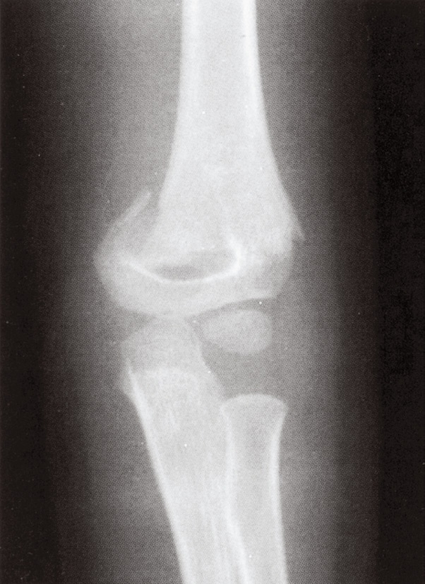
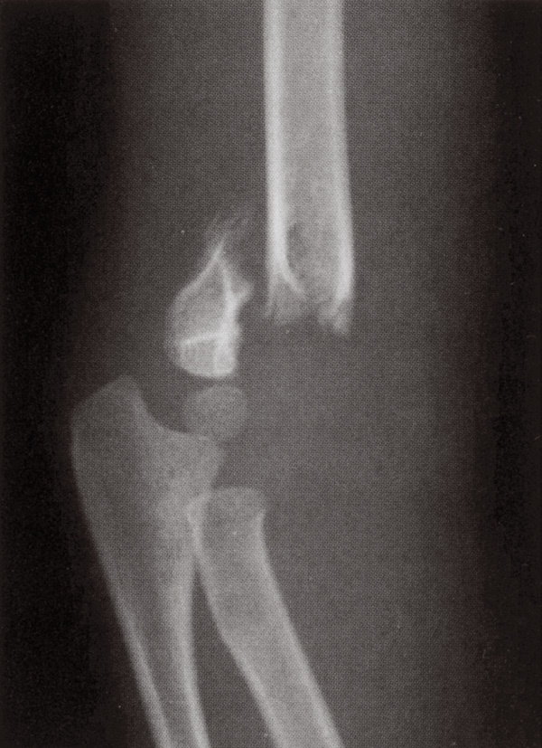
| 疾患 | 年齢・機転 | 所見 | 注意 |
|---|---|---|---|
| 上腕骨顆上骨折 | 5〜8歳。手をついて肘が過伸展 | 肘の著明な腫脹・変形。側面像で骨片が後方転位 | コンパートメント症候群→Volkmann拘縮／正中・橈骨・尺骨神経麻痺 |
| 上腕骨外側顆骨折 | 4〜10歳。内反力 | 外側の限局した腫脹・圧痛。骨端核を含む関節内骨折 | 関節内骨折で自然矯正が効かず、偽関節・外反肘・遅発性尺骨神経麻痺を残す |
| 肘内障 | 1〜4歳。手を引っ張られた | 腫脹・変形なし。回内位で腕を下げたまま使わない | 徒手整復で即座に使い出す |
| 肘関節脱臼 | 学童以降。手をついて過伸展 | 肘頭の後方突出・弾発性固定。エックス線で尺骨・橈骨が上腕骨と関節を失う | 整復後に不安定性・神経血管損傷を確認 |
| Monteggia骨折 | 学童 | 尺骨骨幹部骨折＋橈骨頭脱臼の組合せ | 橈骨頭脱臼を見落としやすい |
| 選択肢 | 解説 |
|---|---|
| ａ 肘関節脱臼骨折 | 脱臼があれば上腕骨と橈骨・尺骨の関節の対応関係が完全に失われる——側面像で肘頭が上腕骨遠位の後方へ乗り上げるのが典型である。本例は関節そのものの対応は保たれており、骨折線は上腕骨遠位の骨幹端部を横切っている。 |
| ｂ Monteggia 骨折 | 尺骨骨幹部の骨折＋橈骨頭の脱臼という組合せの損傷である。本例のエックス線には尺骨骨幹部の骨折線も橈骨頭の脱臼も認めない。（前腕を診るときは必ず肘と手関節を含めて撮る——この組合せを見落とさないため。） |
| ◯ ｃ 上腕骨顆上骨折 | ◯ 上腕骨遠位の「顆の上」＝骨幹端部を横走する骨折線があり、側面像では遠位骨片が後方へ転位している——上腕骨顆上骨折の典型像である。小児の肘周辺骨折で最も多く（約60％）、5〜8歳で手をついて肘が過伸展したときに起こる。側面像では前方脂肪体の挙上・後方脂肪体の出現（fat pad sign）や、anterior humeral line（上腕骨前縁の延長線）が小頭の中央1/3を通らないことも手がかりになる。 |
| ｄ 上腕骨外側顆骨折 | 骨折線は上腕骨遠位の外側部を縦に走り、小頭の骨端核を含む骨片が分離する。関節内骨折（Salter-Harris Ⅳ型）である点が顆上骨折と違う。本例の骨折線は外側に限局せず遠位骨幹端を横断している。 |
| ｅ 上腕骨遠位骨端離開 | 骨端線（成長軟骨板）で骨端全体がずれる損傷で、乳幼児（2歳以下）に多く、被虐待児症候群でも問題になる。骨端核が未発達な年齢では診断が難しく、エックス線で「橈骨・尺骨が上腕骨に対してそろって内側へずれる」のが手がかりになる。本例の年齢と骨折線の走行には合わない。 |
| 段階 | 内容 |
|---|---|
| 分類（Gartland） | Ⅰ型＝転位なし／Ⅱ型＝後方の骨皮質が連続／Ⅲ型＝完全転位 |
| 治療 | Ⅰ型はギプス固定。Ⅱ・Ⅲ型は徒手整復＋経皮的鋼線（Kirschner鋼線）固定。整復できない・血行障害があれば観血的整復 |
| 早期合併症 | コンパートメント症候群→Volkmann拘縮／神経麻痺（前骨間神経・正中神経が最多、次いで橈骨・尺骨）／上腕動脈損傷 |
| 晩期合併症 | 内反肘〈cubitus varus〉＝銃剣状変形（整復不良による変形治癒。関節外の変形なので自家矯正されにくい） |